Chapter 7: Efficient markets, random walk and variance-ratio tests
Daniel Traian PELE
Bucharest University of Economic Studies IDA Institute Digital Assets Blockchain Research Center AI4EFin Artificial Intelligence for Energy Finance Romanian Academy, Institute for Economic Forecasting MSCA Digital Finance
Can yesterday's prices say anything about tomorrow's return? If they could, a simple trading rule would earn money without bearing more risk, and the traders who used it would move prices until the pattern disappeared. A market in which past prices carry no exploitable information is called efficient in the weak sense. Chapter 4 defined the random walk and the martingale as probability models; this chapter turns them into hypotheses and tests them on the daily prices of the S&P 500, the DAX, the BET index of the Bucharest Stock Exchange, Bitcoin and four Bucharest stocks.
The tests answer three different questions. Unit-root tests ask whether log prices wander without returning to a level; they do, in every series of the chapter. Autocorrelation tests and variance-ratio tests ask whether returns are predictable from past returns. Here the answer depends on the market and on the period: the S&P 500 shows a slight mean reversion, with a five-day variance ratio of 0.856, while the BET shows momentum, with a twenty-day variance ratio of 1.517, concentrated in its early years. The DAX and Bitcoin show no predictability that survives a test robust to volatility clustering.
The chapter also shows why the choice of test matters as much as the data. Daily returns have volatility clustering, and classical tests built for independent returns read it as predictability: in a simulation of returns that are unpredictable by construction, the homoskedastic variance-ratio test rejects 17.1% of the time instead of 5%. With robust tests, and with joint tests across several horizons, most markets look close to efficient today, and the predictability that remains is small compared with trading costs.
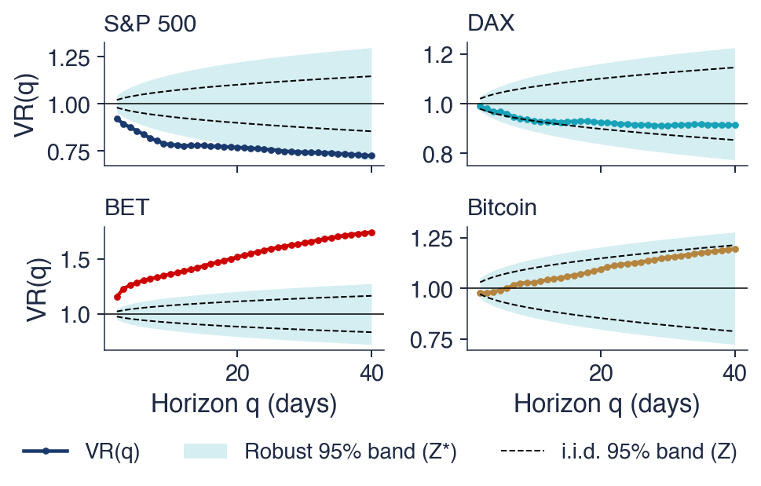
Variance ratio VR(q) of daily log returns for horizons q from 2 to 40 trading days, for the S&P 500, the DAX, the BET and Bitcoin; the shaded area is the 95% band of the robust test \(Z^*\), the dashed lines the 95% band of the test that assumes i.i.d. returns. A value of 1 is the random walk; values below 1 mean that daily moves are partly reversed, values above 1 that they continue.
What you will be able to do
State the three forms of market efficiency and explain why every test of efficiency is a joint test.
Distinguish RW1, RW2, RW3 and the martingale, and say which of them volatility clustering violates.
Read a sample ACF with the right confidence band and compute the Box–Pierce, Ljung–Box and runs statistics.
Run and combine the ADF, Phillips–Perron and KPSS tests on prices and on returns.
Compute a variance ratio and its robust test, for one horizon and for several horizons together.
Judge, on real data, which markets look efficient and whether this changes over time.
Chapter plan
Can Prices Be Predicted?The economic argument against predictability, the history from Bachelier to Fama, and a first look at random walks and real prices.
Efficient MarketsThe definition of efficiency, its three forms, the fair-game model, the joint-hypothesis problem and the Grossman–Stiglitz paradox.
Random Walk HypothesesThe random walk of log prices, the hypotheses RW1, RW2, RW3, the martingale and the square-root-of-time rule.
Testing for AutocorrelationThe Box–Pierce and Ljung–Box tests, a portmanteau test robust to volatility clustering and the runs test.
Unit Roots: Prices against ReturnsStationary and integrated series, spurious regression, the ADF, Phillips–Perron and KPSS tests on prices and returns.
The Variance-Ratio TestThe variance ratio, the Lo–MacKinlay tests, the Chow–Denning joint test and the automatic test.
AI for Scientific DiscoveryAn open question on the efficiency of the BET after 2020, the help AI can give and the checks it needs.
SummaryKey results, formulas and questions for self-assessment.
Can Prices Be Predicted?
The question of the chapter is old. This section gives the economic argument for why predictable prices should not last, follows the idea of random price changes from Bachelier in 1900 to Samuelson and Fama in 1965, and ends with two pictures of real data that show why a formal test is needed.
Suppose past prices did predict future returns, for instance that a rise on one day were usually followed by a rise on the next. A simple rule, buying after every rise, would then earn money without any additional risk. Traders would discover the rule and use it, and their purchases would push today's price up to the level expected for tomorrow. The pattern would disappear through the very trading that exploits it. In a competitive market, predictability of prices destroys itself.
The evidence on professional investors agrees with this argument. Jensen (1968) studied the American mutual funds of 1945–1964 and found that, on average, they did not earn more than a buy-and-hold portfolio of comparable risk once their costs were deducted. Four decades later, Fama & French (2010) found that only a few funds show skill large enough to cover their costs. If well-funded professionals rarely beat the market, a rule built only on past prices, which are available to everyone, is unlikely to do so.
The argument has critics as well as supporters, and Malkiel (2003) gives a balanced survey of both sides. The photograph shows the trading floor of the New York Stock Exchange in 1963, at the time when the statistical study of price changes was taking shape.
In brief
If past prices predicted future returns, a simple rule would earn money with no risk
traders would use the rule; their trades would move prices until the pattern disappears
The evidence on professional investors
mutual funds, on average, did not beat a buy-and-hold portfolio after costs Jensen (1968)
The first mathematical model of prices is due to Louis Bachelier, in his thesis Théorie de la spéculation(Bachelier, 1900). Bachelier modelled the change of a price as the sum of many small random shocks, which makes the change approximately Normal and its variance proportional to the time elapsed. His second conclusion was economic: the expected gain of the speculator is zero. Both ideas return in this chapter, the first as the random walk and the second as the martingale.
Bachelier's work remained almost unknown for half a century. The empirical side reappeared with Kendall (1953), who studied 22 British price series, share-price indices and commodity prices. Kendall had looked for cycles; instead the series "wandered", and the changes from one week to the next looked like independent draws.
Roberts (1959) added a methodological point. He simulated random walks and showed that they display the same "patterns" that chartists, the analysts who forecast prices from charts, see in real prices. A pattern on a chart is therefore not evidence of predictability, since pure chance produces such patterns as well. The next frame repeats Roberts' experiment with modern data.
The chart shows five paths of log prices since 1990, each started at 0, so that the vertical axis measures the cumulative log return. Four paths are simulated random walks whose daily steps are i.i.d. (independent and identically distributed) Normal, with mean 0.033% and standard deviation 1.13% per day, the values of the S&P 500 over the same period. The fifth path is the log price of the S&P 500 minus its first value.
Question for the room: without the legend, could you tell which path is real? Hardly. The simulated paths contain long booms, decade-long stagnations and recoveries that look like the episodes of financial history, although nothing in them is more than noise. Their end values, the cumulative log returns over the whole period, lie between 2.76 and 4.50, and the S&P 500, with 3.06, lies inside this range.
The real path differs only in a few sharp falls, in 2008 and in 2020, a sign of the clustering of large moves that the chapter meets again in the ACF section. This concerns the size of the moves, not their direction. Since the eye cannot separate the real path from pure noise, the question of predictability needs formal tests, and the rest of the chapter builds them.
In brief
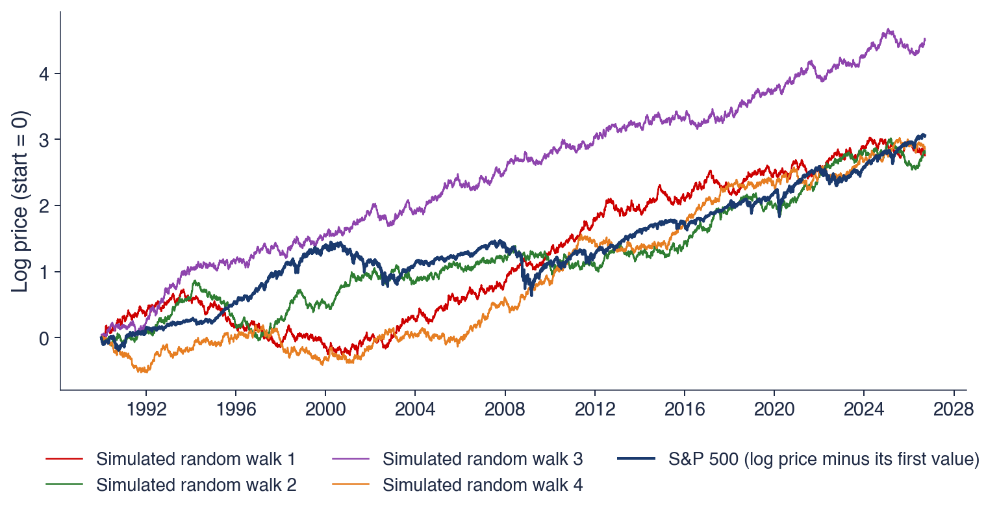
Four random walks with i.i.d. Normal steps (mean \(0.033\%\), standard deviation \(1.13\%\) per day, as the S&P 500) and the S&P 500 log price since 1990
Question for the room: without the legend, could you tell which path is real?
Answer: hardly; booms and long falls appear in pure noise too (end values: \(2.76\) to \(4.50\); S&P 500: \(3.06\))
Paul Samuelson gave the economic reason why prices should behave like a random walk (Samuelson, 1965). If the price already contains everything traders expect, then the next change cannot be predicted: any predictable part would already have been traded into today's price. Formally, the price is a martingale, \(E[P_{t+1} \mid \mathcal{F}_t] = P_t\), where \(\mathcal{F}_t\) is the information available at time \(t\); Chapter 4 defined martingales in this form.
The argument reverses a common intuition. Random price changes are not a sign of a chaotic or irrational market; they are a sign of a market that works, one in which new information enters prices quickly and completely. The title of Samuelson's paper, "Proof that properly anticipated prices fluctuate randomly", states this result.
In the same year Fama (1965) provided the empirical counterpart. In the daily returns of the 30 stocks of the Dow Jones Industrial Average he found almost no autocorrelation: the return of one day said almost nothing about the return of the next.
In brief
Paul Samuelson Samuelson (1965): if prices already contain all that traders expect, the next change is unpredictable
formally: the price is a martingale, \(E[P_{t+1} \mid \mathcal{F}_t] = P_t\) (Chapter 4)
\(\mathcal{F}_t\): the information available at time \(t\)
Randomness of price changes is a sign of a market that works, not of chaos
Fama (1965): daily returns of the 30 Dow Jones stocks show almost no autocorrelation
The chart is the simplest test of predictability. Each point pairs the return of one day (horizontal axis, in %) with the return of the next day (vertical axis, in %). The black line is the least-squares line of today's return on yesterday's. Since both returns come from the same series and have the same variance, its slope equals the first-order autocorrelation \(\hat\rho(1)\), the correlation between consecutive returns.
For the S&P 500, \(\hat\rho(1) = -0.079\): the line slopes slightly downwards, so a rise tends to be followed by a small fall and a fall by a small rise, a slight reversal. For the BET, \(\hat\rho(1) = 0.156\): the line slopes upwards, so moves tend to continue, a slight continuation. In both panels the cloud of points is almost round, and the line explains only a small part of the variation of today's return.
Are these numbers different from zero, or could they arise by chance in a series without dependence? To answer, one needs the sampling distribution of \(\hat\rho(1)\) under the hypothesis of no predictability, which the ACF section derives, and tests that use several lags at once, which the next section after it builds.
In brief
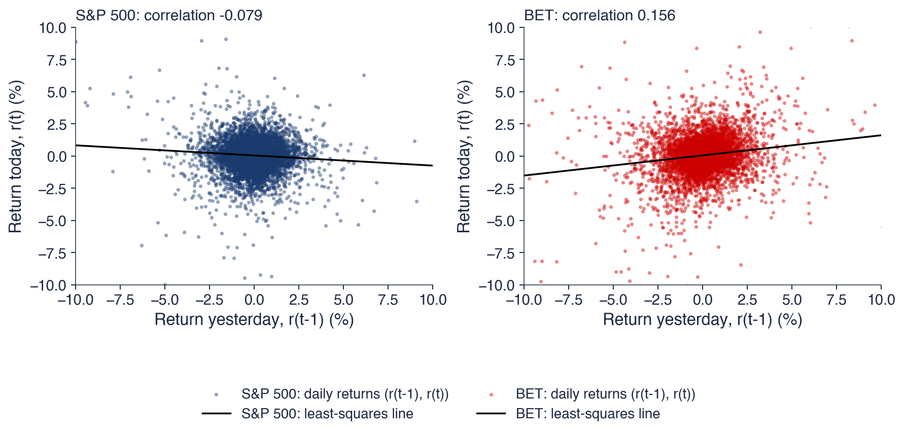
Each point: (return yesterday, return today); the line: least squares; its slope is the first autocorrelation \(\hat\rho(1)\)
S&P 500: \(\hat\rho(1) = -0.079\) (a slight reversal); BET: \(\hat\rho(1) = 0.156\) (a slight continuation); are these numbers different from zero?
The economic argument says that exploitable predictability should disappear through trading, and the evidence on fund managers supports it. Bachelier, Kendall, Roberts, Samuelson and Fama turned this argument into the hypothesis of random price changes. A first look at the data shows paths indistinguishable from simulated random walks and small first-order autocorrelations of opposite sign for the S&P 500 and the BET. The next section states precisely what an efficient market is.
Efficient Markets
This section defines market efficiency, distinguishes its three forms by the information set involved, and writes efficiency as a fair-game model. It then explains two limits of the concept: every test is also a test of a model of expected returns, and perfect efficiency is logically impossible when information is costly.
According to Fama (1970), a market is efficient if prices "fully reflect" the available information \(\Omega_t\). The operational meaning of this definition is that no trading rule based on \(\Omega_t\) earns more than the return that compensates its risk. The EMH (efficient market hypothesis) is the hypothesis that real markets have this property.
If prices already reflect \(\Omega_t\), they move only when news arrives: information that was not in \(\Omega_t\). News is unpredictable by definition, since a predictable piece of information would already be part of \(\Omega_t\). Price changes, apart from the compensation for risk, are therefore unpredictable from \(\Omega_t\).
Efficiency is always relative to an information set. The smaller \(\Omega_t\), the weaker the claim and the easier it is to test. Efficiency also does not mean that returns are zero: the expected return pays for risk, and the average daily return of the S&P 500, about 0.033%, is fully compatible with efficiency. What efficiency excludes is a predictable return in excess of this compensation.
In brief
EMH (efficient market hypothesis) Fama (1970): prices “fully reflect” the available information \(\Omega_t\)
no trading rule based on \(\Omega_t\) earns more than the return that compensates its risk
prices move only on news: information that was not in \(\Omega_t\)
Efficiency is relative to an information set
the smaller \(\Omega_t\), the weaker the claim and the easier the test
Efficient does not mean “returns are zero”: the expected return pays for risk
The table orders three forms of efficiency by the size of the information set. In the weak form, \(\Omega_t\) contains past prices and returns, so technical analysis and chart patterns cannot earn excess returns; the typical tests are autocorrelation tests, runs tests and variance-ratio tests. In the semi-strong form, \(\Omega_t\) contains all public information, so fundamental analysis of public data cannot earn excess returns either; the typical test is the event study. In the strong form, \(\Omega_t\) contains all information, private information included; it is tested on the returns of insiders and of professional fund managers.
The forms are nested: strong efficiency implies semi-strong efficiency, which implies weak efficiency, because each information set contains the previous one. A rejection of the weak form therefore rejects all three, while a failure to reject the weak form says nothing about the stronger forms.
This chapter tests mainly the weak form. Past prices are free data for everyone, and a test that uses only them needs no model of fundamentals (Fama, 1970; Fama, 1991). The last main section turns to the semi-strong and strong forms.
In brief
Form
Information set \(\Omega_t\)
What cannot earn excess returns
Typical test
Weak
past prices and returns
technical analysis, chart patterns
autocorrelation, runs, variance ratio
Semi-strong
all public information
fundamental analysis of public data
event studies
Strong
all information, also private
insider information
returns of insiders and fund managers
The forms are nested: strong \(\Rightarrow\) semi-strong \(\Rightarrow\) weak; a rejection of the weak form rejects all three
This chapter tests mainly the weak form: past prices are free data for everyone Fama (1970), Fama (1991)
Efficiency can be written as a statement about forecast errors. Let \(r_{t+1}\) be the return of an asset and \(E[r_{t+1} \mid \Omega_t]\) its equilibrium expected return, the return that pays for its risk. The excess return, or surprise, is the difference between the two, and the market is a fair game if this surprise has conditional mean zero:
In words, forecast errors are zero on average whatever is known at time \(t\). The consequence for trading follows from the law of iterated expectations. A rule that invests the amount \(w(\Omega_t)\), chosen with the information of time \(t\), earns \(E[w(\Omega_t)\, z_{t+1}] = E[w(\Omega_t)\, E[z_{t+1} \mid \Omega_t]] = 0\) in excess of equilibrium. No rule based on \(\Omega_t\) beats the compensation for risk.
In the simplest case the expected return is a constant \(\mu\), so that \(E[r_{t+1} \mid \Omega_t] = \mu\) and the returns minus \(\mu\) form a martingale difference sequence. The definition requires nothing else. It does not require a constant variance or a Normal distribution, and this is why heavy tails and volatility clustering, the stylised facts of Chapter 2, are compatible with efficiency.
In brief
Let \(r_{t+1}\) be the return of an asset and \(E[r_{t+1} \mid \Omega_t]\) its equilibrium expected return (the return that pays for its risk)
The fair-game model (7.1) contains the equilibrium expected return \(E[r_{t+1} \mid \Omega_t]\), which is not observed. To test efficiency, one must specify it through a model of equilibrium: a constant mean, the CAPM (capital asset pricing model) or a factor model.
Every test of efficiency is therefore a joint test of efficiency and of the model of expected returns (Fama, 1991). A rejection may mean that the market is inefficient, or that the model of expected returns is wrong; the data cannot tell which. Efficiency alone, without a model, can never be rejected.
For daily returns the problem is small. Daily expected returns are tiny, about 0.033% for the S&P 500, against a daily standard deviation of 1.13%, so any reasonable model of expected returns gives almost the same answer. The tests of this chapter use a constant mean, and their conclusions do not depend on this choice.
In brief
To test efficiency we must know the equilibrium expected return \(E[r_{t+1} \mid \Omega_t]\)
this needs a model of equilibrium: constant mean, CAPM (capital asset pricing model), factor models
Every test of efficiency is a joint test of efficiency and of the model Fama (1991)
a rejection may mean an inefficient market, or a wrong model of expected returns
efficiency alone can never be rejected
For daily returns the problem is small: daily expected returns are tiny (about \(0.033\%\) for the S&P 500), so any reasonable model gives almost the same answer
Grossman & Stiglitz (1980) pointed out a logical difficulty in the idea of a perfectly efficient market. Information is costly to collect and to analyse. If prices reflected all information perfectly, nobody would be paid for collecting it, since the price would already contain everything the collector learns. Then nobody would collect it, and prices could not reflect it.
The conclusion is that a market can only be nearly efficient. In equilibrium, prices must leave small inefficiencies that pay informed traders for the cost of their information. Prices then reflect information well enough that uninformed traders cannot profit, but not so well that informed traders lose their incentive.
The paradox changes the empirical question. Instead of "is the market efficient, yes or no?", the question becomes "how efficient, where and when?". This view leads to the adaptive markets hypothesis of the section on efficiency across markets and over time.
The Nobel Prize in Economics of 2013 was shared by Eugene Fama and Robert Shiller, together with Lars Peter Hansen, for their empirical analysis of asset prices. Fama and Shiller are often presented as opponents. Fama's work shows that prices are hard to predict over days and weeks; Shiller's work shows that prices swing too much compared with fundamentals such as dividends and earnings.
Both are right, at different horizons. Short-run returns are almost unpredictable, as the tests of this chapter confirm. Long-run returns are partly predictable from valuation ratios, such as the ratio of price to dividends: when prices are high relative to fundamentals, the returns of the following years tend to be lower. A valuation ratio that returns slowly to its mean implies a tiny predictable component in daily returns, invisible at the daily horizon, which accumulates over years.
This chapter works with daily returns, so it tests the side of the debate associated with Fama: predictability from past prices over short horizons.
Both are right, at different horizons: short-run returns are almost unpredictable; long-run returns are partly predictable from valuation ratios
Section summary
An efficient market is one in which prices reflect an information set \(\Omega_t\), so that no rule based on \(\Omega_t\) earns more than the compensation for risk. The three forms differ by the information set and are nested. Written as a fair game, efficiency requires only that surprises have conditional mean zero, not a constant variance or Normality. Every test is a joint test with a model of expected returns, a small problem for daily data, and costly information makes perfect efficiency impossible. The next section translates weak-form efficiency into precise statistical hypotheses.
Random Walk Hypotheses
Weak-form efficiency becomes testable only when it is written as a hypothesis about the process of log prices. This section defines the random walk with drift, distinguishes three random walk hypotheses of decreasing strength, relates them to the martingale and derives the square-root-of-time rule that follows from them.
in which the increments \(\varepsilon_t\) have mean 0 and the log return \(r_t\) is the drift plus an unpredictable shock. Substituting recursively gives \(p_t = p_0 + \mu t + \sum_{s=1}^{t} \varepsilon_s\): the log price is its starting value plus a linear trend plus the sum of all past shocks. Every shock is permanent, since it stays in all later prices and is never undone.
If the \(\varepsilon_t\) are uncorrelated with variance \(\sigma^2\), the variances of the sum add up. Then \(E[p_t] = p_0 + \mu t\) and \(\mathrm{Var}(p_t - p_0) = t\sigma^2\): the uncertainty about the log price grows linearly with the horizon. The same holds for returns over several days. The \(q\)-day return \(r_t(q) = r_t + \dots + r_{t-q+1}\) has \(\mathrm{Var}(r_t(q)) = q\sigma^2\), a property on which the variance-ratio test is built.
The model is written for log prices, not for prices. A random walk in \(P_t\) could become negative, while \(P_t = e^{p_t}\) is always positive; and log returns add over time (Chapter 1), so the \(q\)-day return is exactly the sum of the daily returns.
In brief
Log price \(p_t = \ln P_t\); random walk with drift\(\mu\): \(p_t = \mu + p_{t-1} + \varepsilon_t\)
the return \(r_t = p_t - p_{t-1} = \mu + \varepsilon_t\): the increments \(\varepsilon_t\) have mean 0
by recursion: \(p_t = p_0 + \mu t + \sum_{s=1}^{t} \varepsilon_s\): every shock is permanent
If the \(\varepsilon_t\) are uncorrelated with variance \(\sigma^2\):
\(E[p_t] = p_0 + \mu t\) and \(\mathrm{Var}(p_t - p_0) = t\sigma^2\): the uncertainty grows with the horizon
the \(q\)-day return \(r_t(q) = r_t + \dots + r_{t-q+1}\) has \(\mathrm{Var}(r_t(q)) = q\sigma^2\)
Log prices, not prices: \(P_t\) cannot become negative, and log returns add over time (Chapter 1)
The model (7.2) is not yet a single hypothesis: it depends on what is assumed about the increments \(\varepsilon_t\).Campbell, Lo & MacKinlay (1997) distinguish three versions. RW1 assumes i.i.d. increments, \(\varepsilon_t \sim \mathrm{IID}(0, \sigma^2)\). It is the strongest version: with independent and identically distributed increments, no function of the past predicts any function of the future, neither the return nor its square nor its sign.
RW2 assumes independent but not identically distributed increments. It allows the variance to change over time, for instance between calm and turbulent regimes, as long as these changes cannot be predicted from the past. RW3 assumes only uncorrelated increments, \(\mathrm{Cov}(\varepsilon_t, \varepsilon_{t-k}) = 0\) for all \(k \ne 0\). It is the weakest version: it allows dependence in the squares, \(\mathrm{Cov}(\varepsilon_t^2, \varepsilon_{t-k}^2) \ne 0\), that is, volatility clustering.
The hypotheses are nested: RW1 implies RW2, which implies RW3. Tests of RW3 use only the autocorrelations of returns, and the tests of the following sections differ mainly in which of the three hypotheses they assume under the null.
In brief
RW1 (i.i.d. increments): \(\varepsilon_t\) independent and identically distributed, \(\varepsilon_t \sim \mathrm{IID}(0, \sigma^2)\)Campbell, Lo & MacKinlay (1997)
the strongest: no function of the past predicts any function of the future
RW2 (independent increments): \(\varepsilon_t\) independent, but not identically distributed
allows the variance to change over time in a way that is not predictable from the past (regimes)
RW3 (uncorrelated increments): \(\mathrm{Cov}(\varepsilon_t, \varepsilon_{t-k}) = 0\) for all \(k \ne 0\)
the weakest: allows \(\mathrm{Cov}(\varepsilon_t^2, \varepsilon_{t-k}^2) \ne 0\), that is, volatility clustering
Nested: RW1 \(\Rightarrow\) RW2 \(\Rightarrow\) RW3; tests of RW3 use only autocorrelations of returns
The table compares the three hypotheses with the martingale, property by property. All four make returns uncorrelated, \(\mathrm{Corr}(r_t, r_{t-k}) = 0\). All except RW3 make the conditional mean unpredictable, \(E[r_t \mid \text{past}] = \mu\). RW3 does so "not always", because a process can be uncorrelated and still have a mean that depends on the past in a nonlinear way, which a correlation does not detect.
The variance rows separate the hypotheses. Only RW1 has a constant variance. RW2 allows the variance to change, but not in a way that past returns predict, so it excludes volatility clustering. RW3 and the martingale allow volatility clustering, and returns generated by a GARCH model satisfy both. GARCH (generalised autoregressive conditional heteroskedasticity, Chapter 9) is the standard model of volatility clustering: tomorrow's variance depends on today's shocks, while the mean stays unpredictable.
The conclusion for testing is that weak-form efficiency needs only a martingale, or RW3, not RW1. A test whose null hypothesis is RW1 can reject because of volatility clustering, even in a market where returns are perfectly unpredictable.
With a drift, the process to examine is the log price minus its trend. The process \(\{p_t - \mu t\}\) is a martingale if \(E[p_{t+1} - \mu(t+1) \mid \mathcal{F}_t] = p_t - \mu t\), the form of Samuelson's condition for log prices (Samuelson, 1965). Equivalently, \(E[r_{t+1} - \mu \mid \mathcal{F}_t] = 0\): the returns minus \(\mu\) are a martingale difference sequence, which is the fair game (7.1) with a constant expected return.
The martingale sits between the random walk hypotheses. A martingale difference with a finite variance is uncorrelated, because \(E[(r_{t+1} - \mu)(r_{t+1-k} - \mu)] = E[(r_{t+1-k} - \mu)\,E[r_{t+1} - \mu \mid \mathcal{F}_t]] = 0\), so the martingale implies RW3. RW1 and RW2 imply the martingale, since independent increments with mean 0 have conditional mean 0. The converse fails: a martingale may have a predictable variance, which RW1 and RW2 exclude.
Question for the room: does volatility clustering contradict weak-form efficiency? The answer is no. Volatility clustering rejects RW1 and RW2, since the variance of tomorrow's return depends on today's return. But a predictable variance does not make the return predictable: knowing that tomorrow will be turbulent does not say whether the price will rise or fall. The martingale and RW3 survive, and with them weak-form efficiency.
In brief
\(\{p_t - \mu t\}\) is a martingale if \(E[p_{t+1} - \mu(t+1) \mid \mathcal{F}_t] = p_t - \mu t\)Samuelson (1965)
equivalently, \(E[r_{t+1} - \mu \mid \mathcal{F}_t] = 0\): the returns minus \(\mu\) are a martingale difference
a martingale difference with finite variance is uncorrelated: martingale \(\Rightarrow\) RW3
RW1 and RW2 imply the martingale; the converse fails: a martingale may have predictable variance
Question for the room: does volatility clustering contradict weak-form efficiency?
Answer: no; it rejects RW1 and RW2, but a predictable variance gives no predictable return; the martingale and RW3 survive
The variance rule \(\mathrm{Var}(r_t(q)) = q\sigma^2\) of the random walk gives the standard deviation of the \(q\)-day return as \(\mathrm{sd}(r_t(q)) = \sigma\sqrt{q}\). For the S&P 500 since 1990, the daily standard deviation is \(\hat\sigma = 1.13\%\).
Step by step: for one week, \(q = 5\) trading days, the factor is \(\sqrt{5} = 2.24\) and the weekly standard deviation is 2.53%. For one month, \(q = 20\), the factor is \(\sqrt{20} = 4.47\) and the monthly standard deviation is 5.07%. For one year, \(q = 250\), the factor is \(\sqrt{250} = 15.81\) and the annual standard deviation is 17.92%. This is the square-root-of-time rule, used to scale VaR and volatility from one horizon to another, for instance from a daily VaR 1% to a ten-day VaR 1%.
The rule needs uncorrelated returns. If returns are positively autocorrelated, the variance of the sum exceeds \(q\sigma^2\) and the rule understates long-horizon risk; if they are negatively autocorrelated, the rule overstates it. The variance-ratio test measures by how much the rule fails.
In brief
S&P 500 since 1990: daily standard deviation \(\hat\sigma = 1.13\%\)
under a random walk, \(\mathrm{sd}(r_t(q)) = \sigma\sqrt{q}\)
one month, \(q = 20\): \(1.13 \times 4.47 = 5.07\%\)
one year, \(q = 250\): \(1.13 \times 15.81 = 17.92\%\)
This is the “square-root-of-time rule” used to scale VaR and volatility
If returns are autocorrelated, the rule fails: the variance-ratio test of Section 7 measures by how much
Section summary
The random walk of log prices makes every shock permanent and the variance of the \(q\)-day return equal to \(q\sigma^2\). RW1, RW2 and RW3 assume i.i.d., independent and uncorrelated increments respectively; the martingale lies between RW2 and RW3. Volatility clustering rejects RW1 and RW2 but not the martingale, so the right null hypothesis for weak-form efficiency is the martingale or RW3. The next section introduces the tool for measuring correlation over time, the autocorrelation function.
White Noise and the Autocorrelation Function
The autocorrelation function (ACF) describes how strongly a series is correlated with its own past. This section defines white noise and the sample ACF, shows the ACF of simulated white noise and of AR and MA processes, and then reads the ACF of daily returns, with a confidence band that does or does not allow for volatility clustering.
For a stationary series \(x_t\), the autocovariance at lag \(k\) is \(\gamma(k) = \mathrm{Cov}(x_t, x_{t-k})\) and the autocorrelation is \(\rho(k) = \gamma(k)/\gamma(0)\). The ACF (autocorrelation function) is the map \(k \mapsto \rho(k)\),\(k = 1, 2, \dots\); it summarises the linear dependence of the series on its own past, lag by lag.
White noise is a series with mean 0, constant variance \(\sigma^2\) and \(\rho(k) = 0\) for every \(k \ne 0\). I.i.d. noise is white noise, and Gaussian white noise is i.i.d. \(N(0, \sigma^2)\). White noise need not be independent, however: GARCH returns are white noise, since they are uncorrelated with a constant unconditional variance, but they are not i.i.d., because their squares are correlated. White noise is the analogue of RW3 for the increments, i.i.d. noise the analogue of RW1.
The sample ACF estimates \(\rho(k)\) from \(T\) observations:
For i.i.d. data, \(\hat\rho(k)\) is approximately \(N(0, 1/T)\), so the 95% band is \(\pm 1.96/\sqrt{T}\). A sample autocorrelation outside this band is significant at 5% under the hypothesis of i.i.d. data.
In brief
Autocovariance at lag \(k\): \(\gamma(k) = \mathrm{Cov}(x_t, x_{t-k})\); autocorrelation: \(\rho(k) = \gamma(k)/\gamma(0)\)
The left panel shows 1,000 draws from \(N(0, 1)\), plotted as a series in time. Nothing in it is predictable, yet the eye still finds short "trends" and "calm periods". The right panel shows the sample autocorrelations \(\hat\rho(1), \dots, \hat\rho(30)\) of these draws, with the 95% band \(\pm 1.96/\sqrt{1000} = \pm 0.062\) as dashed lines.
All 30 sample autocorrelations lie inside the band. This is not guaranteed even for perfect white noise: the band is drawn for each lag separately, so each autocorrelation falls outside it with probability 5%. With 30 lags, about 1.5 are expected outside by chance alone.
The point matters when the ACF of returns is read. One or two autocorrelations outside the band, at isolated lags, are what chance produces when many lags are examined. A joint test of many lags, the subject of the next section, answers the question properly.
In brief
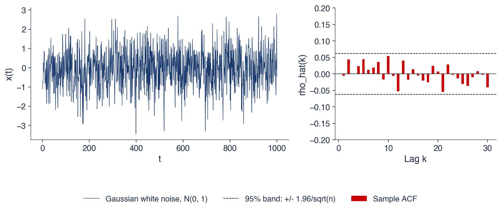
Left: 1 000 draws from \(N(0, 1)\) (as in SFEtimewn); right: \(\hat\rho(1), \dots, \hat\rho(30)\) with the band \(\pm 1.96/\sqrt{1000} = \pm 0.062\)
Here 0 of 30 autocorrelations fall outside the band; with 30 lags we expect about 1.5 by chance alone
The shape of the ACF reveals the type of dependence. In the AR(1) (autoregressive) process \(x_t = \alpha x_{t-1} + \varepsilon_t\) with \(|\alpha| < 1\), the autocorrelations decay geometrically, \(\rho(k) = \alpha^k\). With \(\alpha = 0.9\), for example, \(\rho(3) = 0.9^3 = 0.729\); with \(\alpha < 0\) the signs alternate.
In the AR(2) process \(x_t = \alpha_1 x_{t-1} + \alpha_2 x_{t-2} + \varepsilon_t\), the first autocorrelation is \(\rho(1) = \alpha_1/(1 - \alpha_2)\), and the others follow the recursion \(\rho(k) = \alpha_1\rho(k-1) + \alpha_2\rho(k-2)\). With \(\alpha_1 = 0.5\) and \(\alpha_2 = 0.4\),\(\rho(1) = 0.5/0.6 = 0.833\) and \(\rho(2) = 0.5 \times 0.833 + 0.4 = 0.817\): the dependence is strong and decays slowly.
In the MA(1) (moving average) process \(x_t = \varepsilon_t + \beta\varepsilon_{t-1}\), consecutive values share one shock, so \(\rho(1) = \beta/(1 + \beta^2)\), and values two or more periods apart share none, so \(\rho(k) = 0\) for \(k \ge 2\). With \(\beta = 0.5\),\(\rho(1) = 0.5/1.25 = 0.40\). In general an MA(\(q\)) process has an ACF that cuts off after lag \(q\). Slow decay points to AR dependence, a cut-off to MA dependence, and no autocorrelation at all to white noise.
The six panels compare the theoretical ACF (bars) with the sample ACF of one simulated path of 1,000 values (points) for six processes: AR(1) with \(\alpha = 0.9\) and with \(\alpha = -0.9\), AR(2) with \(\alpha_1 = 0.5\) and \(\alpha_2 = 0.4\), MA(1) with \(\beta = 0.5\) and with \(\beta = -0.5\), and MA(2) with \(\beta_1 = 0.5\) and \(\beta_2 = 0.4\). The horizontal axis is the lag \(k\), from 1 to 20.
The sample ACF follows the theoretical one closely in every panel. The AR(1) with \(\alpha = 0.9\) decays slowly, the AR(1) with \(\alpha = -0.9\) alternates in sign, and the AR(2) stays high for many lags. The MA processes cut off: after lag 1 for the MA(1), after lag 2 for the MA(2). At lags where the theoretical value is zero, the sample values scatter around zero within about \(\pm 0.06\), the sampling noise computed on the previous frame.
A random walk is the limit \(\alpha \to 1\) of the AR(1). Its ACF would not decay at all, since \(\alpha^k = 1\) for every \(k\): every past shock is fully present in today's value. This is why log prices are not studied with the ACF but with the unit-root tests of the section on unit roots, and why the ACF is applied to returns.
In brief
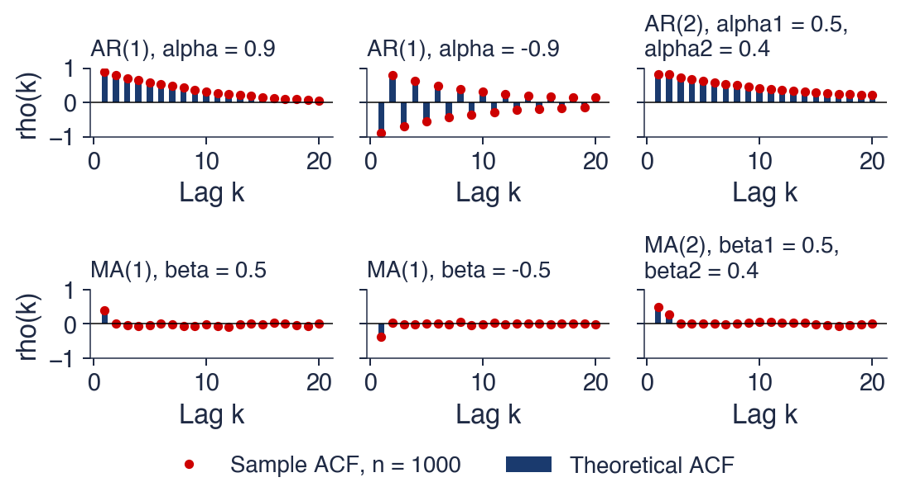
Bars: theoretical \(\rho(k)\); points: sample ACF of one simulated path of 1 000 values (SFEacfar1, SFEacfar2, SFEacfma1, SFEacfma2)
A random walk is the limit \(\alpha \to 1\) of the AR(1): its ACF would not decay at all
The chart shows the sample ACF of daily log returns for four series, the S&P 500, the DAX, the BET and Bitcoin, at lags 1 to 20 days. The bars are the sample autocorrelations \(\hat\rho(1), \dots, \hat\rho(20)\). The dashed lines are the i.i.d. band \(\pm 1.96/\sqrt{T}\) of the first frame of this section; the shaded area is a robust band, defined on the next frame, which allows for volatility clustering.
Two features stand out. The autocorrelations are small, almost all within \(\pm 0.05\), much smaller than those of the AR processes of the previous frame. And the two bands differ: the robust band is wider than the i.i.d. band at short lags, especially for the S&P 500, so that some autocorrelations lie outside the i.i.d. band but inside the robust one.
The largest bar of the chart is the BET autocorrelation at lag 1, which lies far outside both bands. The S&P 500 has a negative first autocorrelation, also outside both bands, while the first autocorrelations of the DAX and Bitcoin lie inside the robust band. The next frame gives the numbers.
In brief
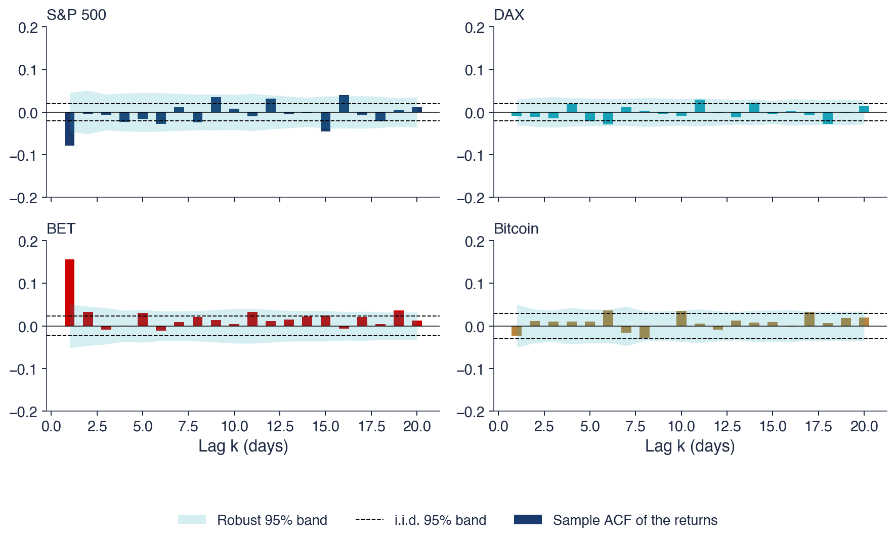
Bars: \(\hat\rho(1), \dots, \hat\rho(20)\); dashed: the i.i.d. band \(\pm 1.96/\sqrt{T}\); shaded: the robust band (next slide)
The first-order autocorrelations are \(-0.079\) for the S&P 500, \(-0.009\) for the DAX, \(0.156\) for the BET and \(-0.022\) for Bitcoin. Only the S&P 500 and the BET stand out at lag 1, with opposite signs: a slight reversal in the S&P 500 and a slight continuation in the BET.
The i.i.d. band assumes \(\mathrm{Var}(\hat\rho(k)) = 1/T\), which holds for i.i.d. returns but not with volatility clustering. The robust band of Lo & MacKinlay (1988) replaces \(1/T\) by \(\hat\delta(k)/T\), so that the band becomes \(\pm 1.96\sqrt{\hat\delta(k)/T}\), with
For i.i.d. returns, \(\hat\delta(k) \approx 1\) and the two bands coincide. With volatility clustering, large returns in absolute value follow large returns, so the products \(e_t^2 e_{t-k}^2\) are large more often than independence implies, and \(\hat\delta(k) > 1\). For the S&P 500 at lag 1, the robust band is \(\pm 0.046\) instead of \(\pm 0.020\), more than twice as wide.
The choice of band changes the conclusion. Of the 20 lags of the S&P 500, 9 lie outside the i.i.d. band, but only 3 lie outside the robust band. The i.i.d. band tests RW1, the robust band tests RW3, which is the hypothesis that matters for efficiency.
In brief
First autocorrelations: S&P 500 \(-0.079\), DAX \(-0.009\), BET \(0.156\), Bitcoin \(-0.022\)
only the S&P 500 and the BET stand out at lag 1, with opposite signs
The chart plots two kinds of sample ACF up to lag 100 for the S&P 500, the BET and Bitcoin: the ACF of the absolute returns \(|r_t|\) (solid lines) and the ACF of the returns themselves (dotted lines). The absolute return measures the size of a move regardless of its direction.
The contrast is sharp. The autocorrelations of the returns stay close to 0 at all lags, apart from the first lag of the BET and of the S&P 500. The autocorrelations of the absolute returns are positive and decay very slowly: for the S&P 500, 0.27 at lag 1, 0.22 at lag 20 and still 0.09 at lag 100. The size of today's move is related to the size of the moves of the last several months.
Large moves follow large moves, in either direction. This is volatility clustering, and it rejects RW1 and RW2 at a glance, since both exclude any dependence in the squares or absolute values. RW3 and the martingale are not touched by this chart, because they concern the direction of moves, not their size. Chapters 8 and 9 measure and model this dependence in volatility.
In brief
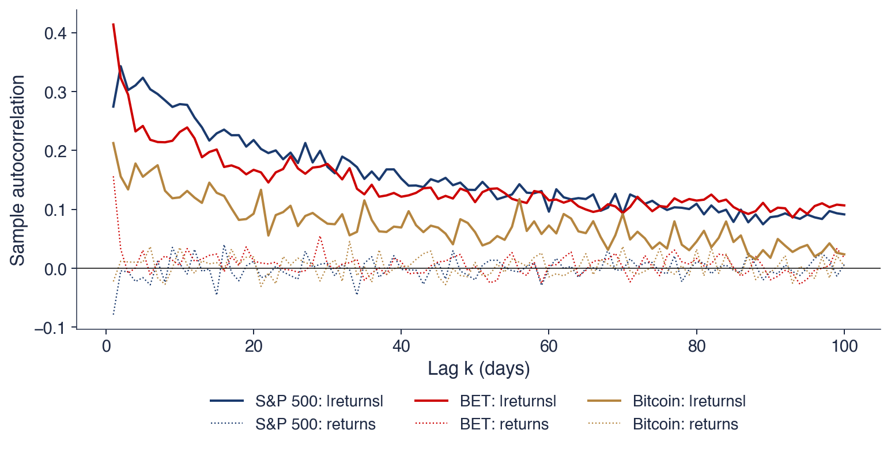
ACF of \(|r_t|\): S&P 500 \(0.27\) at lag 1, \(0.22\) at lag 20, \(0.09\) at lag 100; the returns themselves: dotted lines near 0
Large moves follow large moves: RW1 and RW2 are rejected by eye; RW3 and the martingale are not touched by this chart
White noise has no autocorrelation, but need not be independent. The sample ACF has an i.i.d. band \(\pm 1.96/\sqrt{T}\) and a robust band that widens with volatility clustering; AR processes decay, MA processes cut off. Daily returns have small autocorrelations, with a negative first lag for the S&P 500 and a positive one for the BET, while their absolute values are strongly and persistently correlated. The next section turns these readings into formal tests.
Testing for Autocorrelation
Looking at autocorrelations one lag at a time leaves the question of how many exceedances chance would produce. This section builds tests that combine many lags in one statistic, the Box–Pierce and Ljung–Box portmanteau tests and a version robust to volatility clustering, applies them to eight series, and adds the runs test, which uses only the signs of returns.
A portmanteau test tests \(m\) autocorrelations together. Its null hypothesis is \(H_0: \rho(1) = \dots = \rho(m) = 0\), against the alternative that at least one \(\rho(k)\) differs from zero. The name comes from the portmanteau, a large suitcase that carries many autocorrelations at once.
The Box–Pierce statistic (Box & Pierce, 1970) sums the squared sample autocorrelations, \(Q_{BP}(m) = T\sum_{k=1}^{m} \hat\rho(k)^2\), where \(T\) is the number of returns and \(m\) the number of lags tested. Since each \(\sqrt{T}\hat\rho(k)\) is approximately standard Normal under i.i.d. returns, the sum of their squares is approximately \(\chi^2(m)\). The squares make positive and negative autocorrelations count equally. The LB (Ljung–Box) statistic (Ljung & Box, 1978) weights each lag by its own number of terms:
which is closer to the \(\chi^2(m)\) law in small samples. Under i.i.d. returns both statistics are approximately \(\chi^2(m)\), and \(H_0\) is rejected at 5% if \(Q > \chi^2_{0.95}(m)\); for \(m = 10\),\(\chi^2_{0.95}(10) = 18.31\). The chapter uses \(m = 10\), two trading weeks. The choice involves a trade-off: a larger \(m\) covers more lags but dilutes a short-lived effect, since a single large autocorrelation is then averaged with many near zero.
In brief
\(H_0\): \(\rho(1) = \dots = \rho(m) = 0\); \(H_1\): at least one \(\rho(k) \ne 0\); one test for \(m\) lags together
“portmanteau”: a suitcase that carries many autocorrelations at once
Take \(T = 1000\) daily returns with sample autocorrelations \(\hat\rho(1) = 0.06\),\(\hat\rho(2) = -0.04\) and \(\hat\rho(3) = 0.03\), and test with \(m = 3\). The terms \(T\hat\rho(k)^2\) are 3.6, 1.6 and 0.9, and their sum is the Box–Pierce statistic \(Q_{BP}(3) = 6.10\). The Ljung–Box statistic weights each square by \(T(T+2)/(T-k)\):\(Q_{LB}(3) = 1000 \times 1002 \times (0.06^2/999 + 0.04^2/998 + 0.03^2/997) = 6.12\), almost the same in a sample of this size.
The critical value is \(\chi^2_{0.95}(3) = 7.81\), larger than 6.12, so \(H_0\) is not rejected at 5%. The single lags agree: \(\hat\rho(1) = 0.06\) lies just inside the band \(\pm 1.96/\sqrt{1000} = \pm 0.062\), and the joint test does not reject either.
The same autocorrelations in a sample of \(T = 5000\) give a statistic about five times larger, since \(Q\) is proportional to \(T\), and the rejection is clear. Small autocorrelations become significant in long samples. Statistical significance in a long daily series therefore says little about the size of the effect, a point that returns when significance is weighed against trading costs.
In brief
\(T = 1000\) daily returns, \(\hat\rho(1) = 0.06\), \(\hat\rho(2) = -0.04\), \(\hat\rho(3) = 0.03\); test with \(m = 3\)
\(T\hat\rho(k)^2\): \(3.6\), \(1.6\), \(0.9\); their sum: \(Q_{BP}(3) = 6.10\)
The \(\chi^2\) law of \(Q_{LB}\) rests on \(\mathrm{Var}(\hat\rho(k)) = 1/T\), which is true for i.i.d. returns and false with volatility clustering. With clustering, the sample autocorrelations vary more than \(1/T\) allows, and \(Q_{LB}\) rejects a true martingale far too often.
The remedy of Escanciano & Lobato (2009) is to divide each squared autocorrelation by its own variance \(\hat\delta(k)/T\), with the \(\hat\delta(k)\) of the robust band (7.4):
approximately, for a martingale difference sequence with a finite fourth moment. With i.i.d. returns, \(\hat\delta(k) \approx 1\) and \(\tilde Q \approx Q_{BP}\), so nothing is lost when there is no clustering.
The rule for applied work follows from the random walk hypotheses: test RW1 with \(Q_{LB}\), and test the martingale, that is weak-form efficiency, with \(\tilde Q\).
In brief
The \(\chi^2\) law of \(Q_{LB}\) needs \(\mathrm{Var}(\hat\rho(k)) = 1/T\): true for i.i.d. returns, false with volatility clustering
then \(Q_{LB}\) rejects a true martingale far too often
Robust statistic: divide each \(\hat\rho(k)^2\) by its own variance \(\hat\delta(k)/T\)Escanciano & Lobato (2009)
\(\tilde Q(m) = \sum_{k=1}^{m} \dfrac{T\hat\rho(k)^2}{\hat\delta(k)} \sim \chi^2(m)\) for a martingale difference with finite fourth moment
with i.i.d. returns \(\hat\delta(k) \approx 1\) and \(\tilde Q \approx Q_{BP}\)
Rule: test RW1 with \(Q_{LB}\); test the martingale (weak-form efficiency) with \(\tilde Q\)
The table applies the tests to eight series of daily log returns: the S&P 500 and the DAX since 1990, the BET since 1997, Bitcoin since 2014, and four stocks of the BVB (Bucharest Stock Exchange) since 2010: Banca Transilvania (TLV), OMV Petrom (SNP), BRD – Groupe Société Générale (BRD) and Transgaz (TGN). The columns give the number of returns \(T\), the first autocorrelation \(\hat\rho(1)\), the Ljung–Box statistic \(Q_{LB}(10)\) and its p-value, the robust statistic \(\tilde Q(10)\) and its p-value, the Ljung–Box statistic of the squared returns, and the runs test statistic \(z\) with its p-value.
The two portmanteau tests disagree. The classical Ljung–Box test rejects at 5% for all eight series, with p-values from below 0.001 to 0.030. The robust test rejects only for the S&P 500, with \(\tilde Q(10) = 18.8\) and a p-value of 0.043, and for the BET, with \(\tilde Q(10) = 42.9\) and a p-value below 0.001. For the other six series, the rejection of the classical test is explained by volatility clustering, not by predictable returns.
The column of squared returns shows why. The Ljung–Box statistics of \(r_t^2\) are huge everywhere, from 213 for Bitcoin to 8,015 for the S&P 500, against a 5% critical value of 18.31. RW1 and RW2 are rejected for every series, while the martingale is rejected only for the S&P 500 and the BET. The runs test, discussed on the next frame, rejects at 5% for the S&P 500, the BET, Bitcoin and BRD.
In brief
\(T\)
\(\hat\rho(1)\)
\(Q_{LB}(10)\)
p
\(\tilde Q(10)\)
p
\(Q_{LB}(10)\), \(r^2\)
runs \(z\)
p
S&P 500
9 240
\({-0.079}\)
\(90.8\)
\(<\) 0.001
\(18.8\)
0.043
\(8015\)
\({2.97}\)
0.003
DAX
9 288
\({-0.009}\)
\(21.8\)
0.016
\(8.6\)
0.571
\(3747\)
\({1.73}\)
0.084
BET
7 243
\({0.156}\)
\(198.3\)
\(<\) 0.001
\(42.9\)
\(<\) 0.001
\(2500\)
\({-7.75}\)
\(<\) 0.001
Bitcoin
4 384
\({-0.022}\)
\(20.2\)
0.028
\(11.9\)
0.294
\(213\)
\({2.68}\)
0.007
TLV
3 788
\({0.010}\)
\(29.1\)
0.001
\(13.2\)
0.210
\(481\)
\({-1.68}\)
0.093
SNP
3 815
\({-0.015}\)
\(20.7\)
0.023
\(9.9\)
0.446
\(505\)
\({1.72}\)
0.085
BRD
3 771
\({0.032}\)
\(19.9\)
0.030
\(10.8\)
0.375
\(416\)
\({-3.04}\)
0.002
TGN
3 725
\({0.055}\)
\(28.7\)
0.001
\(12.3\)
0.263
\(639\)
\({1.49}\)
0.136
Classic LB: all eight series reject at 5%; robust \(\tilde Q\): only the S&P 500 (p-value: 0.043) and the BET (p-value: \(<\) 0.001)
Squared returns: huge \(Q_{LB}\) everywhere: RW1 and RW2 are rejected for every series (volatility clustering)
Start of the series: S&P 500 and DAX 1990; BET 1997; Bitcoin 2014; BVB stocks 2010 (TLV without 30–31 May 2016, a data error, Chapter 2)
The runs test of Wald & Wolfowitz (1940) looks only at the signs of returns. A run is a sequence of returns with the same sign: the sequence \(+ + - + + + - -\) has 4 runs. Let \(R\) be the observed number of runs. Since the test uses only signs, it is nonparametric: it makes no assumption on the distribution of returns and is insensitive to heavy tails and to changes in volatility.
With \(n_1\) positive and \(n_2\) negative returns, \(n = n_1 + n_2\), the number of runs under independence has
Too few runs (\(z < 0\)) mean that signs persist, a positive dependence; too many runs (\(z > 0\)) mean that signs alternate, a negative dependence.
The BET has 3,278 runs against 3,606 expected, so \(z = -7.75\): rises tend to follow rises and falls to follow falls. The S&P 500 has 4,738 runs against 4,596 expected, so \(z = 2.97\): signs alternate more often than chance implies. Both directions agree with \(\hat\rho(1)\), continuation in the BET and reversal in the S&P 500, although the runs test reaches them from the signs alone.
In brief
A run: a sequence of returns with the same sign; \(+ + - + + + - -\) has 4 runs Wald & Wolfowitz (1940)
\(R\): the observed number of runs
the test uses only the signs: it is nonparametric, insensitive to heavy tails and to volatility
With \(n_1\) positive and \(n_2\) negative returns, \(n = n_1 + n_2\), under independence:
Portmanteau tests combine \(m\) autocorrelations into one statistic with an approximate \(\chi^2(m)\) law. The classical Ljung–Box test assumes i.i.d. returns and rejects for all eight series; the robust statistic \(\tilde Q\) rejects only for the S&P 500 and the BET. Squared returns are strongly autocorrelated everywhere, so RW1 and RW2 fail while the martingale survives for most series. The runs test confirms the reversal in the S&P 500 and the continuation in the BET. The next section turns from returns to the log prices themselves.
Unit Roots: Prices against Returns
The random walk makes log prices nonstationary and returns stationary. This section defines stationary and integrated series, shows why the distinction matters through spurious regression, presents the Dickey–Fuller, Phillips–Perron and KPSS tests, applies them to prices and returns, and explains why a unit root in prices does not prove efficiency.
A series is (weakly) stationary if its mean and variance are constant and \(\mathrm{Cov}(x_t, x_{t-k})\) depends only on the lag \(k\), not on the date \(t\). In a stationary series shocks fade away and the series returns to its mean; the notation is \(I(0)\), integrated of order 0.
A series is integrated of order 1, \(I(1)\), if it is not stationary but its first difference \(\Delta x_t = x_t - x_{t-1}\) is. The random walk is the standard example: the log price \(p_t\) wanders without returning to any level, while its difference \(\Delta p_t = r_t\) is stationary.
The two cases are separated by one parameter in the AR(1) model \(p_t = \phi\,p_{t-1} + \varepsilon_t\). With \(|\phi| < 1\) the process is a stationary AR(1); with \(\phi = 1\) it is a random walk, the case of a unit root. The name comes from the characteristic equation \(1 - \phi z = 0\), whose root is \(z = 1/\phi\), equal to 1 when \(\phi = 1\). The question of this section is whether log prices are \(I(1)\) and returns \(I(0)\).
In brief
(Weakly) stationary series: constant mean, constant variance, \(\mathrm{Cov}(x_t, x_{t-k})\) depends only on \(k\)
shocks fade away; the series returns to its mean; notation \(I(0)\)
Integrated of order 1, \(I(1)\): not stationary, but its first difference \(\Delta x_t = x_t - x_{t-1}\) is
the random walk is \(I(1)\): \(p_t\) wanders, \(\Delta p_t = r_t\) is stationary
Unit root: in \(p_t = \phi\,p_{t-1} + \varepsilon_t\) the case \(\phi = 1\); \(|\phi| < 1\) gives a stationary AR(1)
the name: the root of \(1 - \phi z = 0\) is \(z = 1/\phi = 1\)
Question of this section: are log prices \(I(1)\) and returns \(I(0)\)?
The left panel shows two independent random walks, \(y_t\) and \(x_t\), of length \(T = 500\). They have nothing to do with each other, yet over long stretches they move together, simply because each wanders far from its starting point. The right panel shows what happens when \(y_t\) is regressed on \(x_t\) in 2,000 repetitions: the histogram of the \(t\)-statistic of the slope, for regressions in levels and in increments, against the \(N(0, 1)\) density.
In levels, the \(t\)-statistic exceeds 1.96 in absolute value in 90% of the repetitions, and the median \(R^2\) is 0.17: a "relation" that does not exist. The histogram spreads over values far beyond any Normal quantile; \(|t| > 40\) occurs in 2.6% of the repetitions, values that lie beyond the drawn range. This is the spurious regression of Granger & Newbold (1974): with \(I(1)\) variables, the usual \(t\)-test has no Normal distribution and rejects the absence of a relation almost always.
In increments, \(|t| > 1.96\) occurs in 5.5% of the repetitions, close to the nominal 5%, and the histogram matches the Normal density. The lesson is to test for unit roots before regressing levels on levels, and to work with returns when the series are \(I(1)\).
In brief
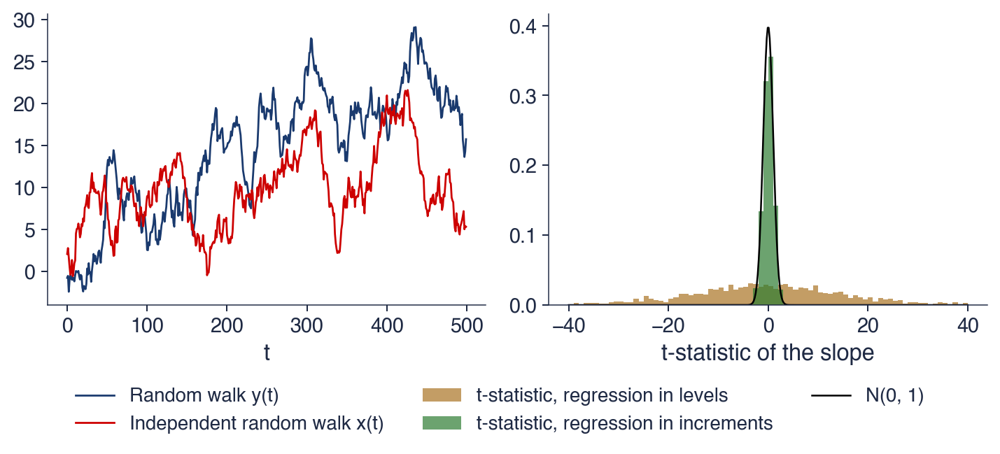
Regress one random walk on another, independent one (\(T = 500\), 2 000 repetitions) Granger & Newbold (1974)
\(|t| > 1.96\) in 90% of cases, median \(R^2 = 0.17\): a “relation” that does not exist
On the increments: \(|t| > 1.96\) in 5.5% of cases, as it should be
lesson: test for unit roots before regressing levels (\(|t| > 40\) in 2.6% of cases, not drawn)
where \(\Delta p_t = p_t - p_{t-1}\) and \(c\) is a constant. A negative \(\gamma\) pulls \(p_t\) back towards a level; \(\gamma = 0\) leaves it wandering. The test is one-sided, with \(H_0: \gamma = 0\) (unit root) against \(H_1: \gamma < 0\) (stationary). The statistic is \(\tau = \hat\gamma/\mathrm{SE}(\hat\gamma)\), the usual \(t\)-ratio of OLS (ordinary least squares).
Under \(H_0\),\(\tau\) does not follow a \(t\) or Normal law, for the same reason as in the spurious regression: the regressor \(p_{t-1}\) is itself a random walk. Its critical values are more negative. At 5%, they are \(-2.86\) with a constant and \(-3.41\) with a constant and a trend (MacKinnon, 1996), against \(-1.645\) for a one-sided Normal test.
The regression has three specifications: no constant, a constant \(c\), or a constant and a trend \(c + bt\), and the critical values depend on the choice. Log prices drift upwards over time, so for them the test uses a constant and a trend; returns have no trend, so for them it uses a constant only.
In brief
Subtract \(p_{t-1}\): \(\Delta p_t = c + \gamma\, p_{t-1} + \varepsilon_t\) with \(\gamma = \phi - 1\)Dickey & Fuller (1979)
\(\Delta p_t = p_t - p_{t-1}\); \(c\): a constant; \(\gamma < 0\) pulls \(p_t\) back towards a level
\(H_0\): \(\gamma = 0\) (unit root); \(H_1\): \(\gamma < 0\) (stationary); a one-sided test
statistic: \(\tau = \hat\gamma/\mathrm{SE}(\hat\gamma)\), the usual \(t\)-ratio of OLS (ordinary least squares)
Under \(H_0\), \(\tau\) does not follow a \(t\) or Normal law: its critical values are more negative
5% critical values MacKinnon (1996): \(-2.86\) with a constant, \(-3.41\) with a constant and a trend (Normal: \(-1.645\))
Three specifications: no constant; constant \(c\); constant and trend \(c + bt\)
log prices drift upwards: use constant and trend; returns: constant only
If returns are autocorrelated, the errors of (7.8) are autocorrelated too, and the critical values no longer apply. The ADF (augmented Dickey–Fuller) test of Said & Dickey (1984) adds lagged differences to the regression to absorb this autocorrelation:
where \(bt\) is a linear trend and \(\delta_j\) are the coefficients of the \(L\) lagged differences. The statistic \(\tau\) and the critical values stay the same. The number of lags \(L\) is chosen by the AIC (Akaike information criterion, Chapter 6), with at most \(12(T/100)^{1/4}\) lags.
The worked example applies the simplest version to the BET log price: a constant, no lags and \(T = 7,243\) daily observations. OLS gives \(\hat\gamma = -0.00001\) with a standard error \(\mathrm{SE}(\hat\gamma) = 0.00016\), so the estimate is tiny compared with its standard error and \(\tau = -0.09\). This is far above the 5% critical value \(-2.86\), so the unit root is not rejected.
In this example the statistic is also far above the Normal critical value \(-1.645\), so the two distributions lead to the same decision. They differ for values of \(\tau\) between \(-2.86\) and \(-1.645\): there a usual \(t\)-test would reject the unit root and the Dickey–Fuller test would not. Using the wrong distribution gives the wrong answer exactly in these cases.
In brief
ADF (augmented Dickey–Fuller) Said & Dickey (1984): add lagged differences to remove autocorrelation from \(\varepsilon_t\)
\(\Delta p_t = c + bt + \gamma\, p_{t-1} + \sum_{j=1}^{L} \delta_j \Delta p_{t-j} + \varepsilon_t\); same \(\tau\), same critical values
\(bt\): a linear trend; \(\delta_j\): the coefficients of the \(L\) lagged differences
\(L\) chosen by AIC (Akaike information criterion, Chapter 6), at most \(12(T/100)^{1/4}\)
Worked example: BET log price, constant, no lags, \(T = 7\,243\)
The PP (Phillips–Perron) test (Phillips & Perron, 1988) handles autocorrelation differently from ADF. It runs the Dickey–Fuller regression without lags and corrects the statistic \(\tau\) for autocorrelation and heteroskedasticity of the errors. The correction uses a long-run variance with Bartlett weights (Newey & West, 1987),
where \(\hat\gamma(j)\) are the autocovariances of the residuals. The weights decline linearly, which keeps the estimate positive. PP has the same null hypothesis and the same critical values as ADF.
The KPSS (Kwiatkowski–Phillips–Schmidt–Shin) test (Kwiatkowski et al., 1992) reverses the hypotheses: \(H_0\) is stationarity, around a constant or around a trend, and \(H_1\) is a unit root. The statistic is \(\mathrm{KPSS} = \sum_{t=1}^{T} S_t^2/(T^2\hat\lambda^2)\), where \(S_t\) are the partial sums of the residuals from a regression on a constant (or a constant and a trend) and \(\hat\lambda^2\) their long-run variance. A stationary series has partial sums that stay small; a unit root makes them wander, and the statistic grows. Stationarity is rejected at 5% if KPSS exceeds 0.463 with a constant or 0.146 with a trend.
The two kinds of test are used together because they ask opposite questions. ADF and PP ask whether there is evidence against a unit root; KPSS asks whether there is evidence against stationarity. If ADF does not reject and KPSS rejects, the series is \(I(1)\); if ADF rejects and KPSS does not, it is \(I(0)\); if both reject or neither does, the evidence is inconclusive.
In brief
PP (Phillips–Perron) Phillips & Perron (1988): the Dickey–Fuller regression without lags; \(\tau\) is corrected for autocorrelation and heteroskedasticity
the correction uses a long-run variance with Bartlett weights Newey & West (1987); same \(H_0\) and critical values as ADF
long-run variance \(\hat\lambda^2 = \hat\gamma(0) + 2\sum_{j=1}^{L}\left(1 - \frac{j}{L+1}\right)\hat\gamma(j)\), with \(\hat\gamma(j)\) the autocovariances of the residuals
The left panel shows the log price of the BET since 1997, the right panel its daily log returns in %. The log price rises from below 6 to above 10, with a long fall in 2008–2009, and never settles around a level. The returns fluctuate around zero with a constant mean, in calm and turbulent periods.
The tests confirm what the panels suggest. For the log price, ADF does not reject the unit root, with a p-value of 0.736, and KPSS rejects stationarity: the log price is \(I(1)\). For the returns, ADF rejects the unit root and KPSS does not reject stationarity: the returns are stationary, \(I(0)\). The panel titles give the statistics, ADF \(-1.73\) and KPSS 2.30 for the log price, ADF \(-13.6\) and KPSS 0.12 for the returns; the next frame reports all of them.
The fall of 2008 looks like a temporary deviation from an upward trend. The tests say otherwise: the shocks of that period were permanent, and the log price did not return to the trend line it had followed before the crisis.
In brief
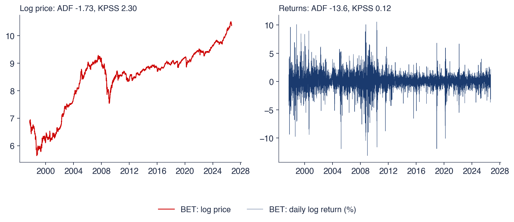
Log price: ADF does not reject a unit root (p = 0.736), KPSS rejects stationarity: \(I(1)\)
Returns: ADF rejects, KPSS does not: stationary, \(I(0)\); all statistics on the next slide
The 2008 fall looks like a temporary deviation, but the tests say: permanent shocks, no return to a trend line
The table reports the ADF, PP and KPSS statistics for the eight series, on the log price with a constant and a trend, and on the returns with a constant. The 5% critical values are \(-3.41\) for ADF and PP with a trend and \(-2.86\) with a constant; for KPSS they are 0.146 with a trend and 0.463 with a constant.
For log prices, ADF and PP do not reject the unit root for any series except TLV, whose ADF statistic of \(-3.46\) is just below \(-3.41\), with a p-value of 0.044; its PP statistic, \(-3.35\), does not reject. KPSS rejects stationarity for every series, with statistics from 0.57 to 2.50, all above 0.146. Log prices are \(I(1)\).
For returns, ADF and PP reject the unit root very strongly, with ADF statistics from \(-12.96\) to \(-59.46\) and PP statistics from \(-57.83\) to \(-105.05\). KPSS never rejects stationarity, with statistics from 0.04 to 0.29, all below 0.463 and with p-values above 0.10. Returns are \(I(0)\). Every series of the chapter has the structure of the random walk: a nonstationary log price whose differences are stationary.
A unit root in prices is necessary for a random walk, but not sufficient. Consider returns that follow the AR(1) \(r_t = 0.3\,r_{t-1} + \varepsilon_t\). The log price is then \(I(1)\), because its differences are stationary, but its increments are predictable: 30% of each day's return carries over to the next. ADF, which asks only whether the price level has a unit root, cannot distinguish this series from a random walk. The BET is a real case: it has a unit root and autocorrelated returns.
The converse argument is stronger. A stationary price, without a unit root, would contradict efficiency, because prices would return to a predictable level and a trader could buy below it and sell above it. TLV comes closest, since ADF rejects the unit root at 5% with a trend; but KPSS also rejects stationarity, so the case is inconclusive, not a profitable rule.
Unit-root tests also have low power against \(\phi\) close to 1: a stationary series with \(\phi\) just below 1 is hard to tell from a random walk in samples of realistic length. The efficiency question is about the increments, and it needs tests on returns, such as the autocorrelation tests of the previous section and the variance-ratio tests of the next one.
In brief
A unit root in prices is necessary for a random walk, but not sufficient
example: \(r_t = 0.3\,r_{t-1} + \varepsilon_t\) makes \(p_t\) an \(I(1)\) series whose increments are predictable
ADF cannot distinguish it from a random walk; the BET has a unit root and autocorrelated returns
A stationary price (no unit root) would contradict efficiency: prices would return to a predictable level
TLV: ADF rejects at 5% with a trend, KPSS also rejects: an inconclusive case, not a profitable rule
Unit-root tests have low power against \(\phi\) close to 1: the efficiency question is about the increments, and needs tests on returns
Section summary
Log prices are \(I(1)\) and returns \(I(0)\) in all eight series: ADF and PP do not reject a unit root in prices (TLV is a borderline exception) and KPSS rejects their stationarity, while for returns the conclusions reverse. Regressions of levels on levels can produce spurious relations, and the Dickey–Fuller statistic needs its own critical values. A unit root in prices is consistent with efficiency but does not prove it, since predictable increments also produce a unit root. The next section tests the increments with the variance ratio.
The Variance-Ratio Test
The random walk implies that the variance of returns grows linearly with the horizon. The variance ratio compares the two sides of this relation and summarises many autocorrelations in one number. This section defines it, presents the Lo–MacKinlay estimator and its homoskedastic and robust tests, shows by simulation why the robust test is needed, and extends the test to several horizons and to a horizon chosen by the data.
Under a random walk, \(\mathrm{Var}(r_t(q)) = q\,\mathrm{Var}(r_t)\): the variance of the \(q\)-day return is \(q\) times the daily variance. The VR (variance ratio) compares the two sides. For a stationary return series, the variance of a sum of \(q\) returns equals \(q\gamma(0) + 2\sum_{k=1}^{q-1}(q-k)\gamma(k)\), and dividing by \(q\gamma(0)\) gives (Lo & MacKinlay, 1988; Campbell, Lo & MacKinlay, 1997)
The number has a direct reading. \(\mathrm{VR}(q) = 1\) corresponds to a random walk, and RW1, RW2 and RW3 all give 1, since all three make the autocorrelations zero. \(\mathrm{VR}(q) > 1\) means positive autocorrelation, momentum: moves continue, so the variance over \(q\) days exceeds \(q\) daily variances. \(\mathrm{VR}(q) < 1\) means negative autocorrelation, mean reversion: moves are partly undone, so the variance over \(q\) days is smaller.
The ratio summarises \(q - 1\) autocorrelations with weights that decline linearly with the lag. When the autocorrelations are small but have the same sign over many lags, the ratio accumulates them, so it has more power against persistent small autocorrelations than tests of single lags. It also measures directly how far the square-root-of-time rule of the random walk section fails.
In brief
Under a random walk, \(\mathrm{Var}(r_t(q)) = q\,\mathrm{Var}(r_t)\); the VR (variance ratio) compares the two sides
The first four sample autocorrelations of the S&P 500 are \(\hat\rho(1) = -0.079\),\(\hat\rho(2) = -0.004\),\(\hat\rho(3) = -0.006\) and \(\hat\rho(4) = -0.022\). For \(q = 2\), formula (7.11) has a single term with weight \(2(1 - 1/2) = 1\), so \(\mathrm{VR}(2) = 1 + \hat\rho(1) = 0.921\).
For \(q = 5\), the weights \(2(1 - k/5)\) are 1.6, 1.2, 0.8 and 0.4 for lags 1 to 4, so \(\mathrm{VR}(5) = 1 + 1.6\hat\rho(1) + 1.2\hat\rho(2) + 0.8\hat\rho(3) + 0.4\hat\rho(4) = 0.855\). The first lag contributes most, but the three small negative autocorrelations that follow push the ratio further below 1.
The Lo–MacKinlay estimator of the next frame, computed directly from sums of returns on the same data, gives \(\mathrm{VR}(2) = 0.922\) and \(\mathrm{VR}(5) = 0.856\). The two forms differ only by small-sample corrections. The meaning is that the weekly variance of the S&P 500 is about 0.856 of five daily variances: daily moves are partly reversed within a week.
In brief
\(\hat\rho(1), \dots, \hat\rho(4)\) of the S&P 500: \(-0.079\), \(-0.004\), \(-0.006\), \(-0.022\)
Lo & MacKinlay (1988) estimate the variance ratio from \(T\) returns with mean \(\hat\mu\) and overlapping \(q\)-day sums \(r_t(q)\). The variance of one-day returns is \(\hat\sigma_a^2 = \frac{1}{T-1}\sum_t (r_t - \hat\mu)^2\), and the variance of \(q\)-day sums, divided by \(q\), is \(\hat\sigma_c^2(q) = \frac{1}{m}\sum_t (r_t(q) - q\hat\mu)^2\), where \(m = q(T - q + 1)(1 - q/T)\) corrects the bias that the overlapping sums create. The estimator is \(\widehat{\mathrm{VR}}(q) = \hat\sigma_c^2(q)/\hat\sigma_a^2\).
Two tests follow. The homoskedastic test, valid under RW1, standardises the deviation from 1 by its variance under i.i.d. returns; the robust test, valid under RW3 and the martingale, uses a variance that allows for volatility clustering:
Both statistics are approximately \(N(0, 1)\) under their null hypotheses.
The robust variance \(\hat\theta(q)/T\) follows from (7.11):\(\widehat{\mathrm{VR}}(q) - 1\) is a weighted sum of sample autocorrelations with weights \(2(q-j)/q\), and each autocorrelation has variance \(\hat\delta(j)/T\), with the \(\hat\delta(j)\) of the robust ACF band (7.4). With i.i.d. returns, \(\hat\delta(j) \approx 1\) and \(Z^*(q) \approx Z(q)\). The photograph shows Andrew W. Lo of MIT (Massachusetts Institute of Technology), one of the two authors of the test.
In brief
With \(T\) returns, mean \(\hat\mu\) and overlapping \(q\)-day sums Lo & MacKinlay (1988):
The size of a test is how often it rejects a true null hypothesis; a 5% test should reject a true \(H_0\) in 5% of samples. The chart reports the sizes of \(Z\) and \(Z^*\) in a simulation: 1,000 samples of \(T = 2000\) returns in which \(H_0\) is true, generated either as i.i.d. Normal returns or by a GARCH(1,1) model with \(\alpha = 0.12\) and \(\beta = 0.86\). GARCH returns are uncorrelated but have volatility clustering; \(\alpha\) measures the reaction of the variance to yesterday's shock and \(\beta\) its persistence. The bars give the percentage of rejections at the 5% level for \(q = 2\), 5 and 10; the dashed line marks 5%.
With i.i.d. returns, both tests reject about 5% of the time, as they should. With GARCH returns, the homoskedastic \(Z(2)\) rejects in 17.1% of the samples, more than three times the nominal level, while the robust \(Z^*(2)\) rejects in only 4.7%. The picture is similar at \(q = 5\) and \(q = 10\):\(Z\) rejects far too often, while \(Z^*\) stays at or slightly below 5%.
The consequence for empirical work is direct. Applied to returns with volatility clustering, \(Z\) finds "inefficiency" that is only volatility clustering. Only \(Z^*\) tests the hypothesis that matters for efficiency, and all the empirical results of this chapter use it.
In brief
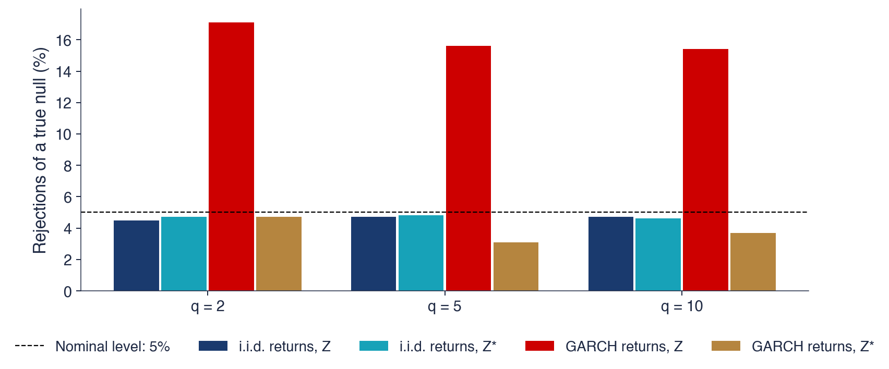
1 000 samples of \(T = 2000\) returns with \(H_0\) true: i.i.d. Normal, and GARCH(1,1) (\(\alpha = 0.12\), \(\beta = 0.86\))
GARCH: uncorrelated returns, with volatility clustering (\(\alpha\): reaction to yesterday's shock, \(\beta\): persistence)
i.i.d.: both reject about 5%; GARCH: \(Z(2)\) rejects 17.1% of the time, \(Z^*(2)\) only 4.7%
The size of a test: how often it rejects a true \(H_0\); \(Z\) finds “inefficiency” that is only volatility clustering
The chart plots \(\mathrm{VR}(q)\) for horizons \(q\) from 2 to 40 trading days, for the S&P 500, the DAX, the BET and Bitcoin. The shaded area is the 95% band of the robust test \(Z^*\) around 1, the dashed lines the 95% band of the homoskedastic test \(Z\). A ratio outside the shaded area rejects the random walk at 5% for that horizon.
The S&P 500 falls below 1 at every horizon and stays below the robust band: mean reversion, which deepens quickly over the first two weeks and more slowly afterwards. The BET rises steadily, to about 1.517 at 20 days and further beyond, far above both bands: momentum. The DAX and Bitcoin stay inside the robust band at every horizon, so the random walk is not rejected for them.
The two bands differ markedly. The i.i.d. band is much narrower, especially at long horizons, because it ignores volatility clustering. A test based on it would declare far more horizons significant, which is the over-rejection of the previous frame seen on real data.
In brief
S&P 500: VR falls below 1 at every horizon (mean reversion); BET: VR rises up to about 1.517 at 20 days and beyond (momentum)
DAX and Bitcoin: inside the robust band (shaded) at every horizon; the i.i.d. band (dashed) is much narrower
The table gives \(\mathrm{VR}(q)\) and \(Z^*(q)\) for the horizons \(q = 2\), 5, 10 and 20, for the eight series. The random walk is rejected at 5% for a given horizon if \(|Z^*| > 1.96\).
For the S&P 500, all four ratios are below 1, from 0.922 at two days to 0.767 at twenty days, and all four robust statistics, from \(-3.37\) to \(-2.06\), reject: significant mean reversion at every horizon. For the BET, all four ratios are above 1, from 1.156 to 1.517, and all four statistics, from 4.74 to 5.99, reject: significant momentum at every horizon. For Transgaz (TGN), \(Z^*(2) = 2.05\) and \(Z^*(5) = 2.60\) reject, while the longer horizons do not. The DAX, Bitcoin, TLV, SNP and BRD show no rejection.
The table contains four tests per series and 32 in all, and the more tests are run, the more "significant" horizons appear by chance. A rejection at two horizons out of four, as for Transgaz, needs a test that accounts for the multiple comparisons. The next frame gives it.
In brief
VR(2)
VR(5)
VR(10)
VR(20)
\(Z^*(2)\)
\(Z^*(5)\)
\(Z^*(10)\)
\(Z^*(20)\)
S&P 500
\(0.922\)
\(0.856\)
\(0.783\)
\(0.767\)
\({-3.37}\)
\({-2.76}\)
\({-2.73}\)
\({-2.06}\)
DAX
\(0.990\)
\(0.968\)
\(0.932\)
\(0.925\)
\({-0.61}\)
\({-0.88}\)
\({-1.21}\)
\({-0.91}\)
BET
\(1.156\)
\(1.283\)
\(1.362\)
\(1.517\)
\({5.99}\)
\({5.25}\)
\({4.74}\)
\({4.94}\)
Bitcoin
\(0.977\)
\(0.991\)
\(1.027\)
\(1.094\)
\({-0.88}\)
\({-0.19}\)
\({0.37}\)
\({0.91}\)
TLV
\(1.009\)
\(0.997\)
\(0.954\)
\(0.995\)
\({0.34}\)
\({-0.04}\)
\({-0.48}\)
\({-0.04}\)
SNP
\(0.985\)
\(0.960\)
\(0.975\)
\(1.038\)
\({-0.53}\)
\({-0.68}\)
\({-0.29}\)
\({0.32}\)
BRD
\(1.032\)
\(1.083\)
\(1.078\)
\(1.107\)
\({1.28}\)
\({1.55}\)
\({0.97}\)
\({0.96}\)
TGN
\(1.055\)
\(1.150\)
\(1.142\)
\(1.166\)
\({2.05}\)
\({2.60}\)
\({1.69}\)
\({1.44}\)
\(|Z^*| > 1.96\): reject the random walk at 5% for that horizon
S&P 500: significant mean reversion at all four horizons; BET: significant momentum at all four
Transgaz: \(Z^*(2) = 2.05\) and \(Z^*(5) = 2.60\); DAX, Bitcoin, TLV, SNP, BRD: no rejection
But eight tests per series at once: some “significant” horizons appear by chance
Testing \(q = 2\), 5, 10 and 20 separately at 5% gives a much higher probability of at least one false rejection than 5%. For 4 independent tests it would be \(1 - 0.95^4 = 18.5\%\); the variance ratios at different horizons are positively correlated, so the true figure is lower, but still well above 5%.
The CD (Chow–Denning) test (Chow & Denning, 1993) makes one decision for all horizons. Its statistic is the largest absolute robust statistic,
where \(\Phi\) is the standard Normal distribution function. The critical value comes from the studentised maximum modulus law, which treats the \(m\) statistics as if they were independent and is therefore conservative.
For \(m = 4\) horizons at 5%, solving \((2\Phi(c) - 1)^4 = 0.95\) gives \(c = 2.49\) instead of 1.96. The random walk is rejected if the largest \(|Z^*|\) over the four horizons exceeds 2.49. The higher threshold is the price of looking at several horizons.
In brief
Testing \(q = 2, 5, 10, 20\) separately at 5% gives a much higher chance of at least one false rejection
The horizon \(q\) of the variance ratio is a choice of the researcher, and different horizons can give different conclusions. The automatic variance-ratio test of Choi (1999) chooses it from the data. It writes the ratio as a weighted sum of all sample autocorrelations, \(\mathrm{VR}(k) = 1 + 2\sum_{i=1}^{T-1} w(i/k)\,\hat\rho(i)\), with weights \(w\) that decline smoothly, given by the quadratic spectral kernel of Andrews (1991). The bandwidth \(k\) plays the role of the horizon and is chosen by Andrews' data-dependent rule: it grows with the first-order autocorrelation and with \(T\). The statistic \(\sqrt{T/k}\,(\mathrm{VR}(k) - 1)/\sqrt2\) is approximately \(N(0, 1)\).
To make the test robust to volatility clustering, Kim (2009) computes its p-value by a wild bootstrap. Each bootstrap sample is \(r_t^* = \eta_t(r_t - \bar r)\) with \(\eta_t \sim N(0, 1)\) independent, and the procedure is repeated 500 times. Multiplying each centred return by an independent random sign and size keeps the size of \(r_t\), and with it the pattern of volatility, but destroys any autocorrelation. The bootstrap statistics thus form a null distribution in which returns are unpredictable but volatility clusters as in the data.
The three tools answer the same question in three ways: \(Z^*(q)\) for a horizon chosen in advance, Chow–Denning for a set of horizons, and the automatic test for a horizon chosen by the data.
In brief
The horizon \(q\) can be chosen from the data: the automatic VR test Choi (1999)
The table gives, for the eight series, the number of returns \(T\), the Chow–Denning statistic over \(q = 2\), 5, 10, 20 and its p-value, the bandwidth \(\hat k\) chosen by the automatic test, the automatic statistic and its wild-bootstrap p-value.
Both tests reject the random walk for the S&P 500 (CD 3.37 with a p-value of 0.003; automatic statistic \(-5.21\) with a p-value of 0.006), for the BET (CD 5.99 and automatic statistic 8.86, both with p-values below 0.001) and for Transgaz (CD 2.60 with a p-value of 0.037; automatic statistic 3.78 with a p-value of 0.004). Neither test rejects for the DAX, Bitcoin, TLV, SNP and BRD. The bandwidth behaves as designed: it is large where the first autocorrelation is large, 5.6 for the BET, and small where it is near zero, 1.7 for the DAX.
A rejection does not mean a profit. An autocorrelation of \(-0.079\), the value of the S&P 500, explains \(\hat\rho(1)^2\), less than 1%, of the variance of tomorrow's return. A rule that exploited it would trade almost every day, and trading costs would absorb most of the expected gain. Statistical predictability is a necessary condition for an inefficiency in the economic sense, not a sufficient one.
In brief
\(T\)
CD
p
\(\hat k\)
automatic VR
p (bootstrap)
S&P 500
9 240
\(3.37\)
0.003
\(3.7\)
\({-5.21}\)
0.006
DAX
9 288
\(1.21\)
0.644
\(1.7\)
\({-0.39}\)
0.608
BET
7 243
\(5.99\)
\(<\) 0.001
\(5.6\)
\({8.86}\)
\(<\) 0.001
Bitcoin
4 384
\(0.91\)
0.835
\(2.0\)
\({-1.01}\)
0.352
TLV
3 788
\(0.48\)
0.981
\(1.5\)
\({0.31}\)
0.718
SNP
3 815
\(0.68\)
0.937
\(1.7\)
\({-0.53}\)
0.562
BRD
3 771
\(1.55\)
0.403
\(2.3\)
\({1.58}\)
0.152
TGN
3 725
\(2.60\)
0.037
\(3.0\)
\({3.78}\)
0.004
Both tests reject for the S&P 500, the BET and Transgaz; neither rejects for DAX, Bitcoin, TLV, SNP and BRD
\(\hat k\) is large where the first autocorrelation is large (BET \(5.6\)), small where it is near 0 (DAX \(1.7\))
Interpretation: rejection does not mean profit
an autocorrelation of \(-0.079\) explains \(\hat\rho(1)^2\), less than 1%, of the variance of tomorrow's return
The variance ratio (7.11) compares the variance of \(q\)-day returns with \(q\) daily variances and equals 1 under every random walk hypothesis. The homoskedastic test \(Z\) over-rejects under volatility clustering, so the robust \(Z^*\) is the right test; Chow–Denning combines several horizons and the automatic test lets the data choose one. All tests agree: mean reversion in the S&P 500, momentum in the BET, a weaker effect in Transgaz, and no predictability in the DAX, Bitcoin, TLV, SNP and BRD. The next section asks whether these conclusions hold across markets and over time.
Efficiency across Markets and over Time
The results so far cover full samples of up to 36 years. This section compares sixteen markets over the same recent decade, introduces the adaptive markets hypothesis, which predicts that efficiency changes over time, and tests this prediction with rolling variance ratios and sub-periods.
The chart compares the five-day variance ratio VR(5) of sixteen markets from 19 September 2016 to 18 September 2026. Each point is the estimate, each horizontal line its robust 95% interval, and the dashed vertical line marks VR = 1, the random walk. Colours separate developed markets (S&P 500, Nikkei 225, Euro Stoxx 50, DAX), emerging markets (among them the BET, the PX of Prague, the WIG20 of Warsaw, the BUX of Budapest, the BIST 100 of Istanbul, the Shanghai Composite, the Nifty 50, the KOSPI, the IPC Mexico and the Bovespa) and crypto markets (Bitcoin and Ethereum).
Using the same decade for every market removes differences in sample period, which matter if efficiency changes over time. The markets are ordered by their estimate, from the PX and the BET at the top, with ratios of about 1.2, to the S&P 500 at the bottom, with the lowest ratio.
Most intervals contain 1. The intervals also differ in width: the widest belong to the S&P 500 and the Bovespa, the narrowest to Bitcoin and Ethereum. The next frame explains the width of the S&P 500 interval.
In brief
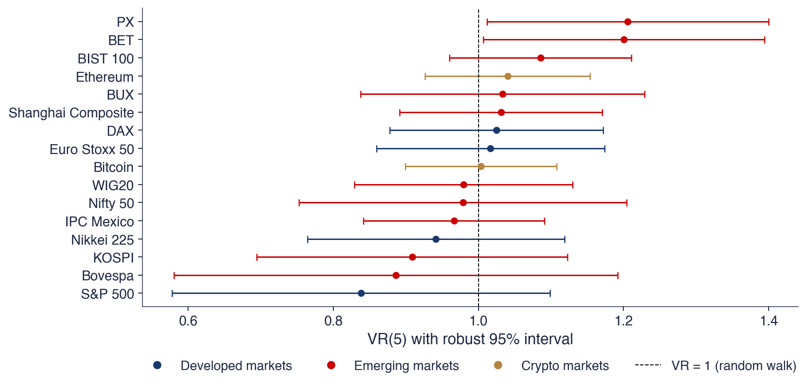
VR(5) with its robust 95% interval, from 19 September 2016 to 18 September 2026: developed, emerging and crypto markets
Only two intervals exclude 1: the PX, with \(Z^*(5) = 2.08\), and the BET, with \(Z^*(5) = 2.03\), both with ratios above 1, that is, momentum. These are two smaller Central European markets whose indices contain less liquid stocks.
With many markets, many tests are run. Sixteen tests at 5% give 0.8 false rejections on average even if every market is efficient. If the tests were independent, the probability of at least one false rejection would be \(1 - 0.95^{16} = 56\%\). Two rejections out of sixteen are therefore weak evidence. The Chow–Denning test over four horizons confirms it: no market rejects at 5%, with p-values of 0.159 for the BET and 0.142 for the PX.
The S&P 500 has the lowest ratio, VR(5) \(= 0.84\), but with a wide interval and \(Z^* = -1.22\), which does not reject. The large swings of 2020 inflate \(\hat\theta\), the robust variance of the ratio, and with it the width of the interval. Bitcoin and Ethereum have ratios close to 1, as the developed markets do. Over the last decade, most markets, the crypto markets included, look close to weak-form efficient.
In brief
Only two intervals exclude 1: the PX (\(Z^*(5) = 2.08\)) and the BET (\(Z^*(5) = 2.03\)), both above 1
two smaller Central European markets, with less liquid index stocks
Many markets, many tests: 16 tests at 5% give 0.8 false rejections on average
if the tests were independent, the chance of at least one false rejection would be \(1 - 0.95^{16} = 56\%\)
Chow–Denning over four horizons: no market rejects at 5% (BET p = 0.159, PX p = 0.142)
S&P 500: VR(5) \(= 0.84\), the lowest, but with a wide interval (\(Z^* = -1.22\)): the large swings of 2020 inflate \(\hat\theta\)
Bitcoin and Ethereum: VR(5) close to 1, as for developed markets
The AMH (adaptive markets hypothesis) of Lo (2004), developed in the book Lo (2017), applies evolutionary ideas to markets. Markets are ecosystems of traders who learn and adapt. Profit opportunities appear, are exploited by the traders who discover them, and disappear; efficiency is not a fixed property but changes with the environment. Crises, new technology, new participants and regulation can move a market away from efficiency or back towards it.
The hypothesis reconciles the Grossman–Stiglitz paradox with the evidence. Inefficiencies exist because someone must be paid for gathering information, but they are not constant: they grow when conditions change and shrink as traders adapt.
Its testable consequence is that predictability varies over time. Kim, Shamsuddin & Lim (2011) find this in a century of U.S. data, Urquhart & McGroarty (2016) in several major markets, and Lim & Brooks (2011) survey the literature on the evolution of efficiency over time. The tool is simple: the same test applied on rolling windows.
In brief
AMH (adaptive markets hypothesis) Lo (2004): markets are ecosystems of traders who learn and adapt
profit opportunities appear, are exploited and disappear; efficiency changes with the environment
crises, new technology, new participants and regulation move the market away from efficiency or back towards it
Testable consequence: predictability varies over time
The chart applies the variance-ratio test on rolling windows of 500 trading days, about two years. A new window starts every 21 trading days, about one month, and each window is dated at its end. The upper panel shows VR(5) in each window, the lower panel the robust statistic \(Z^*(5)\), for the S&P 500 since 1990, the BET since 1997 and Bitcoin since 2014; the dashed lines mark VR = 1 in the upper panel and \(\pm 1.96\) in the lower panel.
A window in which \(Z^*(5)\) lies above 1.96 shows significant momentum over its two years; one in which it lies below \(-1.96\) shows significant mean reversion. The path of the statistic over time shows when each market was predictable and in which direction.
The three markets behave differently. The BET starts far above 1 and falls in steps, with later episodes above 1. The S&P 500 stays mostly below 1, with its deepest point around the crisis of 2008. Bitcoin fluctuates around 1. The next frame gives the numbers.
In brief
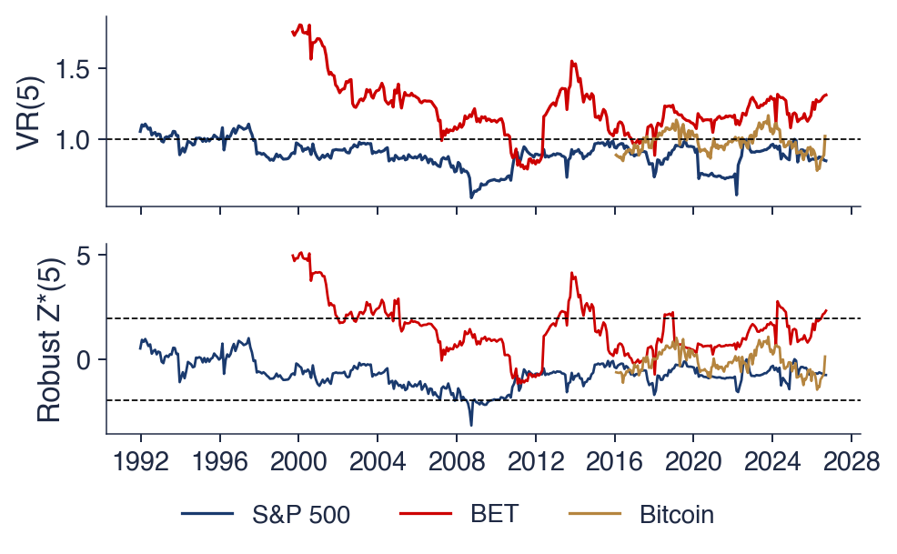
VR(5) and \(Z^*(5)\) on windows of 500 trading days (about two years), a new window every 21 days, dated at the window end
For the BET, VR(5) reaches 1.80 in the window ending in 2000, a strong momentum in the early years of the index. After 2008 the ratio is closer to 1, apart from short episodes such as the one around 2013–2014. Over the whole sample, 29% of the windows reject the random walk at 5%, all of them with VR above 1, that is, momentum.
For the S&P 500, VR(5) lies mostly below 1. The lowest value, 0.59, falls in the window ending in 2008, which covers the financial crisis. Only 4% of the windows reject, all with VR below 1: reversals are strongest in crises, when volatility is high and prices overshoot. For Bitcoin, no window rejects since 2016, over 185 windows.
These shares must be read with care. Consecutive windows share 479 of their 500 days, so their statistics are strongly dependent, and the share of rejecting windows is not the rejection rate of independent tests. It is a description of how predictability changed over time, not a test of whether it changed.
In brief
BET: VR(5) up to 1.80 in the window ending in 2000; closer to 1 after 2008, apart from short episodes
29% of the windows reject at 5%, all of them with VR \(> 1\) (momentum)
S&P 500: VR(5) mostly below 1; the lowest, 0.59, in the window ending in 2008
4% of the windows reject, all with VR \(< 1\): reversals are strongest in crises
Bitcoin: no window rejects since 2016 (185 windows)
Caution: consecutive windows share 479 of 500 days; the share of rejecting windows is a description, not a test
The table splits each sample into three sub-periods of roughly equal length, which do not overlap. For each it gives the number of returns \(T\), the first autocorrelation, VR(5), \(Z^*(5)\) and the p-value of the Chow–Denning test over four horizons.
For the BET, the first period, 1997–2006, shows strong momentum: \(\hat\rho(1) = 0.270\), VR(5) \(= 1.50\),\(Z^*(5) = 6.15\) and a Chow–Denning p-value below 0.001. In 2007–2016, the first autocorrelation falls to 0.066 and nothing is significant. Since 2017, VR(5) \(= 1.20\) is still above 1 and \(Z^*(5) = 2.04\) slightly exceeds 1.96, but the joint test does not reject (p-value 0.154).
For the S&P 500, the negative autocorrelation appears only after 2002: in 1990–2001, \(\hat\rho(1) = 0.017\) and VR(5) \(= 0.96\), while in 2002–2013, \(\hat\rho(1) = -0.100\), VR(5) \(= 0.80\) and the joint test rejects (p-value 0.010), and in 2014–2026, \(\hat\rho(1) = -0.124\), VR(5) \(= 0.85\) and the joint p-value is 0.080. Bitcoin shows no rejection in any period since 2014, with VR(5) between 0.98 and 1.01; Urquhart (2016) found inefficiency in its earliest years, before the sample of this chapter begins.
In brief
period
\(T\)
\(\hat\rho(1)\)
VR(5)
\(Z^*(5)\)
CD p
BET
1997–2006
2 306
\({0.270}\)
\(1.50\)
\({6.15}\)
\(<\) 0.001
BET
2007–2016
2 516
\({0.066}\)
\(1.08\)
\({0.82}\)
0.262
BET
2017–2026
2 421
\({0.064}\)
\(1.20\)
\({2.04}\)
0.154
S&P 500
1990–2001
3 025
\({0.017}\)
\(0.96\)
\({-0.62}\)
0.334
S&P 500
2002–2013
3 019
\({-0.100}\)
\(0.80\)
\({-2.53}\)
0.010
S&P 500
2014–2026
3 196
\({-0.124}\)
\(0.85\)
\({-1.30}\)
0.080
Bitcoin
2014–2017
1 201
\({0.028}\)
\(0.98\)
\({-0.23}\)
0.983
Bitcoin
2018–2021
1 461
\({-0.058}\)
\(0.98\)
\({-0.21}\)
0.374
Bitcoin
2022–2026
1 722
\({-0.026}\)
\(1.01\)
\({0.18}\)
0.924
BET: strong momentum in 1997–2006 (\(\hat\rho(1) = 0.270\)), much weaker afterwards
since 2017 VR(5) is still above 1, but the joint test does not reject
S&P 500: the negative autocorrelation appears after 2002
Bitcoin: no rejection in any period since 2014; Urquhart (2016) found inefficiency in its earliest years
The main explanation of the early momentum of the BET is thin trading: in its first years, many index stocks traded only a few times per day, some not every day. A closing price could then be hours old, a stale price that does not yet reflect the news of the afternoon. News entered the index over several days, as each stock traded in turn.
The index then shows positive autocorrelation even if each stock is efficient. Today's index return contains part of yesterday's news, through the stocks whose prices were stale yesterday, and so it is correlated with yesterday's index return. This explains why momentum appears in the index of a small market and fades as trading becomes more frequent.
The market changed after 2007: more liquidity, foreign investors, Romania's membership of the EU (European Union), and the upgrade by FTSE Russell to Secondary Emerging market status, effective in 2020 (FTSE Russell, 2019). The decline of the BET autocorrelation from 0.270 to about 0.06 follows these changes. Pele & Mazurencu-Marinescu (2012) study the crashes of the Bucharest Stock Exchange. The photograph shows the Stock Exchange Palace in Bucharest.
In brief
Thin trading: few trades per day in many index stocks
a closing price may be hours old; news enters the index over several days
the index then shows positive autocorrelation even if each stock is efficient
Changes after 2007
more liquidity, foreign investors, EU membership, the FTSE Russell upgrade to Secondary Emerging (2020) FTSE Russell (2019)
Over the last decade, only the PX and the BET reject the random walk at five days, and no market rejects once several horizons are tested together. Over longer histories, predictability changes, as the adaptive markets hypothesis predicts: the BET had strong momentum in 1997–2006, explained by thin trading, which faded as the market developed; the S&P 500 acquired its mean reversion after 2002, strongest in crises; Bitcoin shows no predictability since 2014. The next section turns from past prices to public and private information.
Semi-Strong Form, Strong Form and Anomalies
The weak form uses only past prices. This section presents the tools for the two stronger forms, event studies and the returns of insiders and fund managers, and then examines calendar anomalies, patterns in returns that efficiency does not predict, on the S&P 500 and the BET.
The event study is the standard test of the semi-strong form, presented by MacKinlay (1997) and in Chapter 4 of Campbell, Lo & MacKinlay (1997). It asks how fast a price absorbs public news, such as an earnings announcement or a merger. The abnormal return is the return minus the return predicted by a model, for instance the market return, and it is cumulated over a window around the announcement. In an efficient market, the cumulative abnormal return jumps on the day of the news and shows no drift afterwards; a slow drift would mean that the news was absorbed gradually and could have been traded on.
Recent research applies the method at very different speeds. Tak, Schlamp, Osterrieder & Pele (2026) measure in nanoseconds how fast futures prices at Eurex and the CME (Chicago Mercantile Exchange) absorb news, and Lin, Găman, Wang & Pele (2025) study the market responses to Ethereum development milestones.
The strong form asks whether anyone with private information can earn excess returns. Insiders, managers who trade the shares of their own company, do, which is why trading on inside information is illegal. Professional fund managers mostly do not (Jensen, 1968; Fama & French, 2010). The strong form therefore fails for insiders and holds approximately for professional investors.
An anomaly is a pattern in returns that the equilibrium model does not explain. Three calendar anomalies are classics. The weekend effect is the tendency of Monday returns to be low or negative (French, 1980). The January effect is the tendency of returns to be higher in January, mostly for small stocks (Rozeff & Kinney, 1976). The turn-of-the-month effect is the concentration of returns around the first trading days of the month (Ariel, 1987).
Do anomalies last? McLean & Pontiff (2016) find that the returns of published anomalies fall after publication, which is consistent with traders learning and with the adaptive view of the previous section. Through the joint-hypothesis problem, an anomaly may also reveal a missing risk factor rather than an inefficiency.
The search for anomalies has its own statistical danger, data mining. With enough calendar splits, by weekday, month, day of the month or holiday, some will look significant by chance. Harvey, Liu & Zhu (2016) count hundreds of patterns that have been tested in the cross-section of returns and argue that a new one needs a \(t\)-statistic above 3, not 2, to account for this multiple testing.
In brief
An anomaly: a pattern in returns that the equilibrium model does not explain
weekend effect: low or negative Monday returns French (1980)
January effect: higher returns in January, mostly for small stocks Rozeff & Kinney (1976)
turn-of-the-month effect: returns concentrated around the first trading days of the month Ariel (1987)
Do anomalies last?
returns of published anomalies fall after publication: traders learn McLean & Pontiff (2016)
hundreds of patterns have been tested: a new one needs \(|t| > 3\), not 2 Harvey, Liu & Zhu (2016)
Data mining: with enough calendar splits, some will look significant by chance
The chart shows the mean daily log return, in %, for each weekday, for the S&P 500 and the BET, with 95% intervals. The intervals use Newey–West standard errors (Newey & West, 1987), which allow for autocorrelation and heteroskedasticity, both present in daily returns. The weekend effect would appear as a Monday bar clearly below the others.
The test of the anomaly is not whether a bar differs from zero, since a positive mean return is expected on every day, but whether the means differ across weekdays. The Wald test of equal means across the five weekdays gives a p-value of 0.69 for the S&P 500 and 0.24 for the BET. The BET has the only negative mean, \(-0.019\%\) on Mondays, but it is not significant, and its interval is wide.
The January effect fares no better. In the BET, the mean return in January is 0.185% per day against 0.036% in the other months, with \(t = 1.72\) and a p-value of 0.09; for the S&P 500 the p-value is 0.59. No calendar effect survives at 5% in these data, which agrees with the finding that published anomalies weaken over time.
In brief
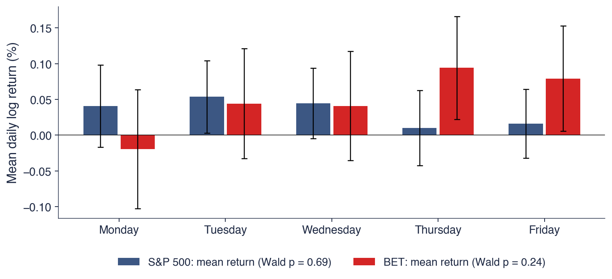
Mean daily return by weekday with 95% intervals (Newey–West standard errors Newey & West (1987))
Wald test of equal means across weekdays: S&P 500 p = 0.69, BET p = 0.24
BET Monday: \(-0.019\%\), the only negative mean, yet not significant
January: BET \(0.185\%\) per day against \(0.036\%\) (\(t = 1.72\), p = 0.09); S&P 500: p = 0.59
Event studies test the semi-strong form by the speed with which prices absorb public news; the strong form fails for insiders but holds approximately for professional fund managers. Calendar anomalies such as the weekend and January effects were documented decades ago, but their returns fall after publication, and the search for them is exposed to data mining. In the S&P 500 and the BET, no weekday or January effect is significant at 5%.
AI for Scientific Discovery
The tools of the chapter can be applied to questions that are still open. This section states one such question, about the efficiency of the Bucharest market after its upgrade to emerging-market status, describes how AI (artificial intelligence) tools could support a study of it, lists the checks such a study needs and proposes a project.
Did the BET become more efficient after Romania's upgrade to Secondary Emerging market status by FTSE Russell, effective in September 2020 (FTSE Russell, 2019)? The upgrade brought index funds and foreign investors, which should increase liquidity and reduce the stale prices that produced the early momentum of the BET.
The data do not yet answer the question. In the five years before the upgrade, the first autocorrelation was \(\hat\rho(1) = -0.002\) and VR(5) \(= 1.12\), with \(Z^* = 0.80\). In the five years after, \(\hat\rho(1) = 0.087\) and VR(5) \(= 1.18\), with \(Z^* = 1.78\). The difference between the two ratios has \(z = 0.34\), so there is no evidence of a change, in either direction.
The question remains open because several things happened at the same time: the COVID-19 (coronavirus disease 2019) pandemic, new large listings and higher trading volumes. It is also unclear whether the index or each stock is the right unit of analysis, since thin trading affects the index even when every stock is efficient. AI tools can speed up such a study; they do not replace checking it (Wang et al., 2023).
In brief
Did the BET become more efficient after Romania's upgrade to Secondary Emerging market (September 2020)?FTSE Russell (2019)
five years before: \(\hat\rho(1) = -0.002\), VR(5) \(= 1.12\) (\(Z^* = 0.80\))
five years after: \(\hat\rho(1) = 0.087\), VR(5) \(= 1.18\) (\(Z^* = 1.78\))
difference of the two VR(5): \(z = 0.34\): no evidence of a change
Why it is open: COVID-19, new large listings and higher volumes happened at the same time
is the index or each stock the right unit?
AI tools can speed up such a study; they do not replace checking it Wang et al. (2023)
AI tools could contribute at three stages. For the literature, they can list the studies of efficiency in Central and Eastern European markets and the tests those studies use. For the code, they can write a first draft of rolling Lo–MacKinlay and automatic variance-ratio tests for the stocks of the BET, with wild-bootstrap p-values. For robustness, they can propose variations: other windows, other horizons, the BET-TR (BET Total Return, which includes dividends) instead of the BET, and trading volume as a control.
The example prompt on the slide asks for the core computation: a Python function that computes the Lo–MacKinlay variance ratio VR(5) and the heteroskedasticity-robust \(z\)-statistic for daily BET log returns on rolling 500-day windows, and tests whether the mean ratio differs before and after 21 September 2020.
Each of these outputs is a draft. The next frame lists what must be checked before a draft becomes a result; the prompt itself contains one of the pitfalls.
In brief
Literature: list studies of efficiency in Central and Eastern European markets and the tests they use
Code: a first draft of rolling Lo–MacKinlay and automatic VR tests for BET stocks, with wild-bootstrap p-values
Robustness: other windows, other horizons, BET-TR instead of BET, trading volume as a control
Example prompt
Write a Python function that computes the Lo-MacKinlay variance ratio VR(5) and the heteroskedasticity-robust z-statistic for daily BET log returns on rolling 500-day windows, and test whether the mean VR differs before and after 21 September 2020.
The first check is the statistic. The test must be the robust \(Z^*\), not the homoskedastic \(Z\); a draft that uses \(Z\) will "find" inefficiency that is only volatility clustering, as the Monte Carlo check showed. The second check is the input. The test applies to log returns of the index, not to price levels, and a unit-root test on returns is not a test of efficiency, since returns are stationary whether or not they are predictable.
The third check concerns the rolling windows. Consecutive windows overlap, so a \(t\)-test on the mean of rolling statistics, as the example prompt asks for, treats dependent numbers as independent and overstates the evidence. The fourth check concerns the design: the event date and the window length are fixed before looking at the result, not chosen after trying several.
The last check concerns the references. AI tools can produce plausible citations to papers that do not exist; every cited paper must be checked, and its DOI (digital object identifier) must resolve to the paper it claims to be.
In brief
The statistic: robust \(Z^*\), not the homoskedastic \(Z\); a draft that uses \(Z\) will “find” inefficiency
Log returns of the index, not price levels; no unit-root test on returns used as an efficiency test
Rolling windows overlap: a \(t\)-test on the mean of rolling statistics treats dependent numbers as independent
The event date and the window are fixed before looking at the result
References: every cited paper must exist; check the DOI
The project asks whether the Bucharest market is more efficient today than in 2015, and whether the change, if any, appears in the index or in the individual stocks. The data are the BET since 1997, the BET-TR since 2014 and the four BVB stocks of the chapter, TLV, SNP, BRD and TGN, since 2010, from the market-data provider EODHD (EOD Historical Data).
The steps follow the chapter. Compute rolling VR(2) and VR(5) with \(Z^*\) and the Chow–Denning test, for the index and for each stock. Compare 2015–2020 with 2020–2025 by a block bootstrap of the difference, which keeps the dependence of returns within blocks. Repeat the analysis for the WIG20 and the BUX as controls: if all three markets changed at the same time, the change is regional or global, not specific to the Romanian upgrade.
The deliverables are one table, one chart and a paragraph on what the data can and cannot show. Any use of AI must be declared, together with a list of the AI errors that were corrected.
In brief
Question: is the Bucharest market more efficient today than in 2015?
a second question: does the change appear in the index or in the individual stocks?
data: BET since 1997, BET-TR since 2014, BVB stocks (TLV, SNP, BRD, TGN) since 2010 (EODHD)
Steps
rolling VR(2), VR(5) with \(Z^*\) and the Chow–Denning test for the index and for each stock
compare 2015–2020 with 2020–2025 by a block bootstrap of the difference
repeat for the WIG20 and the BUX as controls: did all of them change at the same time?
Deliverable: one table, one chart, and a paragraph on what the data can and cannot show
Declare any AI use, and list the errors of the AI that you corrected
Section summary
The question whether the BET became more efficient after 2020 uses all the tools of the chapter: robust variance ratios, joint tests, rolling windows and the distinction between the index and its stocks. The estimates before and after the upgrade do not differ significantly, and simultaneous changes make the question hard to settle. AI tools can draft the literature review and the code, but the checks on the statistic, the input, the overlapping windows, the design and the references remain the work of the researcher.
Summary
The summary collects the main results of the chapter, its formulas and three questions for self-assessment.
A market is efficient if prices reflect information; in the weak form, past prices cannot be used to earn returns in excess of the compensation for risk. The right null hypothesis for the weak form is the martingale, or RW3, not RW1: volatility clustering rejects RW1 and RW2 but is not an inefficiency, because a predictable variance does not make the return predictable.
Log prices are \(I(1)\) and returns \(I(0)\) in all the series of the chapter, but a unit root alone does not prove efficiency, since predictable returns also produce a unit root in prices. Efficiency must be tested on returns, with robust tests: the portmanteau statistic \(\tilde Q\) and the variance-ratio statistic \(Z^*(q)\). Several horizons are combined with the Chow–Denning test, or the data choose the horizon through the automatic variance-ratio test.
The evidence is mixed in an informative way. The S&P 500 shows a slight mean reversion, the early BET a clear momentum, and most markets look close to efficient today; efficiency varies over time, as the adaptive markets hypothesis predicts. Statistical predictability is not profit: trading costs and risk decide whether a predictable pattern can be exploited.
In brief
Efficient market: prices reflect information; weak form = past prices cannot be used to earn excess returns
The right null is the martingale (RW3), not RW1: volatility clustering is not inefficiency
Log prices are \(I(1)\) and returns \(I(0)\) in all our series; a unit root alone does not prove efficiency
Use robust tests: \(\tilde Q\) and \(Z^*(q)\); join horizons with Chow–Denning or let the data choose (automatic VR)
Evidence: S&P 500 slightly mean-reverting, early BET trending, most markets close to efficient today; efficiency varies over time
Statistical predictability is not profit: costs and risk decide
The table collects the formulas of the chapter. The random walk (7.2) gives \(\mathrm{Var}(r_t(q)) = q\sigma^2\). The sample ACF (7.3) is read with the robust band \(\pm 1.96\sqrt{\hat\delta(k)/T}\) of (7.4). The Ljung–Box statistic (7.5) is approximately \(\chi^2(m)\) under i.i.d. returns, and its robust version is (7.6). The runs test (7.7) compares the observed number of runs with \(E[R] = 2n_1n_2/n + 1\).
For unit roots, the ADF regression (7.9) gives the statistic \(\tau = \hat\gamma/\mathrm{SE}(\hat\gamma)\) with Dickey–Fuller critical values, and the KPSS statistic \(\sum_t S_t^2/(T^2\hat\lambda^2)\) tests the reversed null hypothesis of stationarity, with the long-run variance (7.10).
For the variance ratio, (7.11) writes \(\mathrm{VR}(q)\) as a weighted sum of autocorrelations, the robust test \(Z^*(q)\) and its variance \(\hat\theta(q)\) are given in (7.12), and the Chow–Denning test (7.13) takes the maximum of \(|Z^*(q_i)|\) over \(m\) horizons, with \(P(\mathrm{CD} \le c) = (2\Phi(c) - 1)^m\).
First question: \(\hat\rho(1) = 0.10\) and \(\hat\rho(k) = 0\) for \(k \ge 2\); what does VR(2) tell us? By (7.11),\(\mathrm{VR}(2) = 1 + 0.10 = 1.10\): the two-day variance is 10% larger than under a random walk, a sign of momentum.
Second question: ADF does not reject on log prices and KPSS rejects; is the market efficient? These results say only that prices are \(I(1)\). Efficiency is a property of the increments, and it needs tests on returns, such as the ACF and the variance ratio.
Third question: for the S&P 500, the homoskedastic \(Z(q)\) is about twice the robust \(Z^*(q)\); which one should be reported? The robust \(Z^*(q)\). Volatility clustering raises the variance of \(\widehat{\mathrm{VR}}(q)\), which \(Z(q)\) ignores, so \(Z(q)\) rejects a true martingale too often. Chapter 8 turns to volatility estimators and to volatility clustering itself.
In brief
Question: \(\hat\rho(1) = 0.10\) and \(\hat\rho(k) = 0\) for \(k \ge 2\); what does VR(2) tell us?
Answer: \(1 + 0.10 = 1.10\): the two-day variance is 10% larger than under a random walk: momentum
Question: ADF does not reject on log prices and KPSS rejects; is the market efficient?
Answer: we only know that prices are \(I(1)\); efficiency needs tests on the increments (ACF, VR)
Question: for the S&P 500 the homoskedastic \(Z(q)\) is about twice the robust \(Z^*(q)\); which one should we report?
Answer: \(Z^*(q)\): volatility clustering raises the variance of \(\widehat{\mathrm{VR}}(q)\), which \(Z(q)\) ignores, so \(Z(q)\) rejects a true martingale too often
Next: Chapter 8, volatility estimators and volatility clustering
Section summary
Weak-form efficiency is a statement about returns, and its right statistical form is the martingale, which allows heavy tails and volatility clustering. Log prices have a unit root in every series, but the tests that matter are those on returns, made robust to volatility clustering: they find mean reversion in the S&P 500, momentum in the BET that faded as the market developed, and no predictability in most other markets today. Whether a remaining pattern is an inefficiency depends on trading costs and risk, not on the p-value alone.